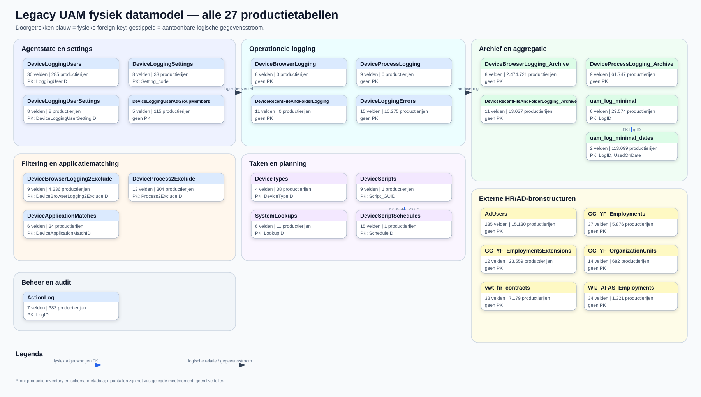
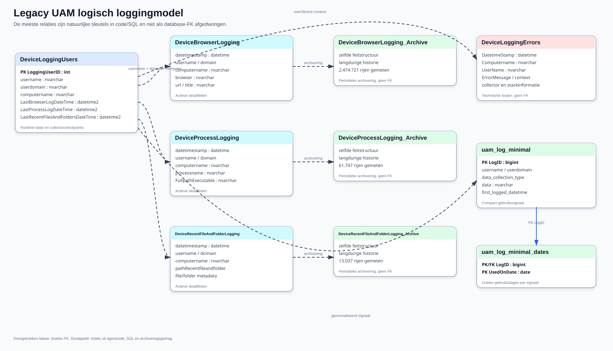
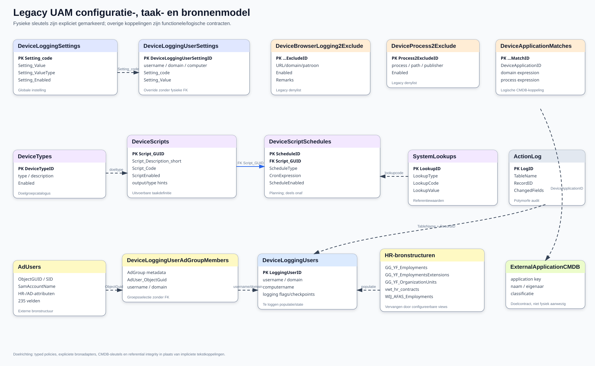

Het model is gereconstrueerd uit productie GGWVSQLA002/IAM, uam.ps1 en de DEV-/productie-PSU-app. Productie is gebruikt omdat de IAMDEV-kopie via SELECT INTO sleutels, indexen en foreign keys verliest.
De export bevat 27 tabellen en 569 velden. De productieprofieljob heeft per tabel één read-only NOLOCK-scan uitgevoerd en uitsluitend total/non-null-aantallen teruggegeven. Er zijn geen productiewaarden geëxporteerd voor de data dictionary.
Slechts twee foreign keys zijn daadwerkelijk aanwezig:

Het overzicht bevat alle 27 tabellen, hun productie-rijtelling, aantal velden
en de aanwezige primary keys. Er zijn maar twee fysiek afgedwongen foreign
keys: DeviceScriptSchedules.Script_GUID naar DeviceScripts.Script_GUID en
uam_log_minimal_dates.LogID naar uam_log_minimal.LogID. De overige
koppelingen bestaan in agentcode, SQL, beheerapp of gegevensstroom.
De gestippelde relaties hieronder worden door code en kolomnamen gebruikt, maar niet door SQL Server afgedwongen.

De gestippelde relaties zijn natuurlijke sleutels en gegevensstromen die uit de agent, SQL en archivering volgen. Alleen de blauwe relatie tussen de twee minimal-tabellen is een database-FK. Dit onderscheid is belangrijk: een nieuwe implementatie mag de huidige impliciete koppelingen niet per ongeluk als harde, betrouwbare referential integrity behandelen.

Dit model combineert de globale instellingen en overrides, het nog onvoltooide
taak-/planningsmodel, filtering en applicatiematching, externe HR/AD-structuren
en de polymorfe audit. ExternalApplicationCMDB is bewust als doelcontract
getekend: die entiteit bestaat niet fysiek in het legacy schema.
ExternalHrView staat voor klantconfigureerbare HR-/AD-contracten. In het legacy schema zijn hiervoor volledige structuren gekopieerd: AdUsers, GG_YF_Employments, GG_YF_EmploymentsExtensions, GG_YF_OrganizationUnits, vwt_hr_contracts en WIJ_AFAS_Employments. De nieuwe UAM mag deze tabellen niet bezitten of hardcoden; definieer smalle configureerbare views met een versieerbaar contract.
| Domein | Tabellen | Rol |
|---|---|---|
| Agentstate/settings | DeviceLoggingUsers, DeviceLoggingSettings, DeviceLoggingUserSettings |
Runtime, checkpoints, globale config en overrides. |
| Detailfeiten | DeviceBrowserLogging, DeviceProcessLogging, DeviceRecentFileAndFolderLogging |
Actieve detailtabellen; kunnen na archivering leeg zijn. |
| Historie | de drie _Archive-tabellen |
Langdurige detailhistorie. |
| Aggregatie | uam_log_minimal, uam_log_minimal_dates |
Compact gebruikssignaal en gebruiksdag. |
| Filtering/matching | DeviceBrowserLogging2Exclude, DeviceProcess2Exclude, DeviceApplicationMatches |
Legacy denylist en applicatiematches. |
| Taken | DeviceScripts, DeviceScriptSchedules, DeviceTypes, SystemLookups |
Uitbreidbare taakdefinitie/planning; deels onaf. |
| Selectie/bronnen | DeviceLoggingUserAdGroupMembers plus zes externe bronstructuren |
HR/AD-populatie en groepskoppeling. |
| Beheer/audit | ActionLog, DeviceLoggingErrors |
Portalmutaties en agentfouten. |
Grootste feitenverzamelingen tijdens inventarisatie:
| Tabel | Productierijen | Gereserveerd |
|---|---|---|
DeviceBrowserLogging_Archive |
2.474.721 | circa 854,5 MB |
uam_log_minimal_dates |
113.099 | zie inventoryartifact |
DeviceProcessLogging_Archive |
61.747 | zie inventoryartifact |
uam_log_minimal |
29.574 | zie inventoryartifact |
DeviceRecentFileAndFolderLogging_Archive |
13.037 | zie inventoryartifact |
DeviceLoggingErrors |
10.275 | zie inventoryartifact |
Exacte momentopnames staan in artifacts/database/00_legacy_uam_prod_inventory.* en het nieuwere veldprofiel.
De volledige dictionary staat in legacy-data-dictionary.md en machineleesbaar als:
artifacts/database/04_legacy_uam_data_dictionary.csv;artifacts/database/04_legacy_uam_data_dictionary.json.Per veld zijn datatype, nullability, sleutel/index, productievulling, codehits in agent/DEV/PROD, gegevensgevoeligheid, beoordeling, migratieadvies en opmerkingen opgenomen.
Vier velden voldoen aan de strenge reviewregel “productietabel bevat rijen, veld is altijd null en geen exacte codeverwijzing in de drie codebases”:
| Tabel | Veld | Bewijs | Advies |
|---|---|---|---|
DeviceBrowserLogging2Exclude |
Remarks |
4.236 rijen; 0 gevuld; 0 codehits | Kandidaat vervallen, eerst externe/reportconsumenten uitsluiten. |
DeviceScriptSchedules |
IntervalMinutes |
1 rij; 0 gevuld; 0 codehits | Alleen behouden als intervalplanning expliciet in het nieuwe contract komt. |
DeviceScriptSchedules |
SpecificRunTime |
1 rij; 0 gevuld; 0 codehits | Waarschijnlijk overlapt dit met cron/once scheduling; ontwerpbesluit nodig. |
DeviceScriptSchedules |
LastRunTime |
1 rij; 0 gevuld; 0 codehits | In nieuw model liever immutable task-run history dan mutable scheduleveld. |
Een kleine populatie, leegte of nul codehits is afzonderlijk geen verwijderbewijs. Dynamisch SQL en externe consumenten blijven mogelijk.
ActionLog is polymorf en kan geen referentiële integriteit afdwingen.DeviceApplicationID is tekst en verwijst niet fysiek naar een applicatietabel.DeviceLoggingUsers combineert identiteit, installatie, runtime, diagnostics en task state.De documentatiekopie staat onder schema uam_legacy_doc in IAMDEV. De installer:
IAMDEV;dbo door uam_legacy_doc;USE [IAM]-regels;DROP, TRUNCATE of productiewrite.Uitvoering hoort in de gedocumenteerde PSU-runtime:
.\scripts\Install-LegacyUamDocumentationSchema.ps1 `
-SqlInstance GGWVSQLa002 `
-Database IAMDEV `
-Schema uam_legacy_doc `
-Confirm:$false
De uitgevoerde installatie is geverifieerd op 27 tabellen, 569 velden, 13 primary keys, 2 foreign keys, 15 indexen en 4.891 rijen.
Deze appendix is gegenereerd uit het productie-DDL, een read-only productieprofiel en statische codezoeking in uam.ps1, de DEV-app en de productie-app.
COUNT_BIG(*) en non-null-aantallen met NOLOCK; er zijn geen veldwaarden geëxporteerd.Invoke-Expression en externe consumenten kunnen niet altijd statisch worden bewezen.kandidaat vervallen betekent: niet gevuld én niet in de drie onderzochte codebases aangetroffen. Het is geen automatisch verwijderadvies.De volledige machineleesbare details, inclusief afzonderlijke sterke/tokenreferentietellingen, staan in artifacts/database/04_legacy_uam_data_dictionary.csv en .json.
Polymorf auditspoor van beheeracties in de PSU-app.
Productie: 383 rijen; 0.48 MB gereserveerd. Eigendom: Legacy UAM.
| # | Veld | Type | Null | Sleutel | Vulling | Codegebruik | Beoordeling | Opmerking |
|---|---|---|---|---|---|---|---|---|
| 1 | LogID | int | nee | IDENTITY; PK(1) | 100% | agent 4; DEV 5; PROD 8 | structureel | Onderdeel van identity-, primary-key- of foreign-keystructuur. |
| 2 | ActionType | nvarchar(50) | ja | 100% | agent 0; DEV 6; PROD 11 | actief in code | Exacte codetokens: agent=0, DEV-app=6, PROD-app=11. | |
| 3 | TableName | nvarchar(100) | ja | 100% | agent 0; DEV 14; PROD 43 | actief in code | Exacte codetokens: agent=0, DEV-app=14, PROD-app=43. | |
| 4 | RecordID | varchar(128) | ja | 100% | agent 0; DEV 1; PROD 7 | actief in code | Polymorfe tekstsleutel; de doelentiteit wordt alleen via TableName geïnterpreteerd. Exacte codetokens: agent=0, DEV-app=1, PROD-app=7. | |
| 5 | ChangedFields | nvarchar(max) | ja | 100% | agent 0; DEV 1; PROD 11 | actief in code | Vrije auditpayload; kan persoonsgegevens en oude/nieuwe waarden bevatten. Exacte codetokens: agent=0, DEV-app=1, PROD-app=11. | |
| 6 | UserName | nvarchar(100) | ja | 100% | agent 46; DEV 17; PROD 26 | actief in code | Exacte codetokens: agent=46, DEV-app=17, PROD-app=26. | |
| 7 | Timestamp | datetime | ja | 100% | agent 4; DEV 4; PROD 14 | actief in code | Exacte codetokens: agent=4, DEV-app=4, PROD-app=14. |
Extern AD-gebruikerssnapshot; breed klantbroncontract en geen eigendom van UAM.
Productie: 15130 rijen; 56.16 MB gereserveerd. Eigendom: External source contract.
| # | Veld | Type | Null | Sleutel | Vulling | Codegebruik | Beoordeling | Opmerking |
|---|---|---|---|---|---|---|---|---|
| 1 | SID | nvarchar(max) | ja | 100% | agent 0; DEV 0; PROD 0 | extern bronveld | Niet als UAM-eigendom beoordelen; alleen projecteren wat de module werkelijk nodig heeft. | |
| 2 | SIDHistory | nvarchar(max) | ja | 0% | agent 0; DEV 0; PROD 0 | extern bronveld | Niet als UAM-eigendom beoordelen; alleen projecteren wat de module werkelijk nodig heeft. | |
| 3 | LastKnownParent | varchar(8000) | ja | 1.89% | agent 0; DEV 0; PROD 0 | extern bronveld | Niet als UAM-eigendom beoordelen; alleen projecteren wat de module werkelijk nodig heeft. | |
| 4 | ObjectCategory | varchar(8000) | ja | 100% | agent 0; DEV 0; PROD 0 | extern bronveld | Niet als UAM-eigendom beoordelen; alleen projecteren wat de module werkelijk nodig heeft. | |
| 5 | instanceType | int | ja | 100% | agent 0; DEV 0; PROD 0 | extern bronveld | Niet als UAM-eigendom beoordelen; alleen projecteren wat de module werkelijk nodig heeft. | |
| 6 | ObjectClass | varchar(8000) | ja | 100% | agent 1; DEV 0; PROD 0 | extern bronveld | Niet als UAM-eigendom beoordelen; alleen projecteren wat de module werkelijk nodig heeft. | |
| 7 | employeeType | varchar(8000) | ja | 0.05% | agent 0; DEV 0; PROD 0 | extern bronveld | Niet als UAM-eigendom beoordelen; alleen projecteren wat de module werkelijk nodig heeft. | |
| 8 | ObjectGUID | uniqueidentifier | ja | 100% | agent 0; DEV 0; PROD 0 | extern bronveld | Niet als UAM-eigendom beoordelen; alleen projecteren wat de module werkelijk nodig heeft. | |
| 9 | objectSid | nvarchar(max) | ja | 100% | agent 0; DEV 0; PROD 0 | extern bronveld | Niet als UAM-eigendom beoordelen; alleen projecteren wat de module werkelijk nodig heeft. | |
| 10 | servicePrincipalName | varchar(max) | ja | 0.03% | agent 0; DEV 0; PROD 0 | extern bronveld | Niet als UAM-eigendom beoordelen; alleen projecteren wat de module werkelijk nodig heeft. | |
| 11 | ServicePrincipalNames | varchar(max) | ja | 0.03% | agent 0; DEV 0; PROD 0 | extern bronveld | Niet als UAM-eigendom beoordelen; alleen projecteren wat de module werkelijk nodig heeft. | |
| 12 | UserPrincipalName | varchar(8000) | ja | 99.97% | agent 0; DEV 0; PROD 0 | extern bronveld | Niet als UAM-eigendom beoordelen; alleen projecteren wat de module werkelijk nodig heeft. | |
| 13 | DistinguishedName | varchar(8000) | ja | 100% | agent 6; DEV 0; PROD 0 | extern bronveld | Niet als UAM-eigendom beoordelen; alleen projecteren wat de module werkelijk nodig heeft. | |
| 14 | CN | varchar(8000) | ja | 100% | agent 0; DEV 0; PROD 0 | extern bronveld | Niet als UAM-eigendom beoordelen; alleen projecteren wat de module werkelijk nodig heeft. | |
| 15 | CanonicalName | varchar(8000) | ja | 100% | agent 0; DEV 0; PROD 0 | extern bronveld | Niet als UAM-eigendom beoordelen; alleen projecteren wat de module werkelijk nodig heeft. | |
| 16 | ou | varchar(8000) | ja | 100% | agent 1; DEV 9; PROD 9 | extern bronveld | Niet als UAM-eigendom beoordelen; alleen projecteren wat de module werkelijk nodig heeft. | |
| 17 | PrimaryGroup | varchar(8000) | ja | 100% | agent 0; DEV 0; PROD 0 | extern bronveld | Niet als UAM-eigendom beoordelen; alleen projecteren wat de module werkelijk nodig heeft. | |
| 18 | primaryGroupID | int | ja | 100% | agent 0; DEV 0; PROD 0 | extern bronveld | Niet als UAM-eigendom beoordelen; alleen projecteren wat de module werkelijk nodig heeft. | |
| 19 | SamAccountName | varchar(8000) | ja | 100% | agent 2; DEV 14; PROD 10 | extern bronveld | Niet als UAM-eigendom beoordelen; alleen projecteren wat de module werkelijk nodig heeft. | |
| 20 | Name | varchar(8000) | ja | 100% | agent 25; DEV 20; PROD 59 | extern bronveld | Niet als UAM-eigendom beoordelen; alleen projecteren wat de module werkelijk nodig heeft. | |
| 21 | sAMAccountType | int | ja | 100% | agent 0; DEV 0; PROD 0 | extern bronveld | Niet als UAM-eigendom beoordelen; alleen projecteren wat de module werkelijk nodig heeft. | |
| 22 | EmployeeID | varchar(8000) | ja | 9.86% | agent 0; DEV 0; PROD 0 | extern bronveld | Niet als UAM-eigendom beoordelen; alleen projecteren wat de module werkelijk nodig heeft. | |
| 23 | EmployeeNumber | varchar(8000) | ja | 46.37% | agent 0; DEV 3; PROD 3 | extern bronveld | Niet als UAM-eigendom beoordelen; alleen projecteren wat de module werkelijk nodig heeft. | |
| 24 | EmailAddress | varchar(8000) | ja | 50.57% | agent 0; DEV 2; PROD 0 | extern bronveld | Niet als UAM-eigendom beoordelen; alleen projecteren wat de module werkelijk nodig heeft. | |
| 25 | varchar(8000) | ja | 50.57% | agent 0; DEV 2; PROD 0 | extern bronveld | Niet als UAM-eigendom beoordelen; alleen projecteren wat de module werkelijk nodig heeft. | ||
| 26 | mailNickname | varchar(8000) | ja | 49.94% | agent 0; DEV 0; PROD 0 | extern bronveld | Niet als UAM-eigendom beoordelen; alleen projecteren wat de module werkelijk nodig heeft. | |
| 27 | Enabled | bit | ja | 100% | agent 22; DEV 5; PROD 13 | extern bronveld | Niet als UAM-eigendom beoordelen; alleen projecteren wat de module werkelijk nodig heeft. | |
| 28 | Manager | varchar(8000) | ja | 51.1% | agent 0; DEV 2; PROD 2 | extern bronveld | Niet als UAM-eigendom beoordelen; alleen projecteren wat de module werkelijk nodig heeft. | |
| 29 | AccountExpirationDate | datetime2(7) | ja | 11.18% | agent 0; DEV 0; PROD 0 | extern bronveld | Niet als UAM-eigendom beoordelen; alleen projecteren wat de module werkelijk nodig heeft. | |
| 30 | AccountLockoutTime | datetime2(7) | ja | 1.17% | agent 0; DEV 0; PROD 0 | extern bronveld | Niet als UAM-eigendom beoordelen; alleen projecteren wat de module werkelijk nodig heeft. | |
| 31 | AccountNotDelegated | bit | ja | 100% | agent 0; DEV 0; PROD 0 | extern bronveld | Niet als UAM-eigendom beoordelen; alleen projecteren wat de module werkelijk nodig heeft. | |
| 32 | showInAddressBook | varchar(max) | ja | 50.08% | agent 0; DEV 0; PROD 0 | extern bronveld | Niet als UAM-eigendom beoordelen; alleen projecteren wat de module werkelijk nodig heeft. | |
| 33 | DisplayName | varchar(8000) | ja | 99.94% | agent 0; DEV 0; PROD 0 | extern bronveld | Niet als UAM-eigendom beoordelen; alleen projecteren wat de module werkelijk nodig heeft. | |
| 34 | displayNamePrintable | varchar(8000) | ja | 0.01% | agent 0; DEV 0; PROD 0 | extern bronveld | Niet als UAM-eigendom beoordelen; alleen projecteren wat de module werkelijk nodig heeft. | |
| 35 | Surname | varchar(8000) | ja | 62.89% | agent 0; DEV 0; PROD 0 | extern bronveld | Niet als UAM-eigendom beoordelen; alleen projecteren wat de module werkelijk nodig heeft. | |
| 36 | GivenName | varchar(8000) | ja | 63.42% | agent 0; DEV 0; PROD 0 | extern bronveld | Niet als UAM-eigendom beoordelen; alleen projecteren wat de module werkelijk nodig heeft. | |
| 37 | Initials | varchar(8000) | ja | 42.02% | agent 0; DEV 0; PROD 0 | extern bronveld | Niet als UAM-eigendom beoordelen; alleen projecteren wat de module werkelijk nodig heeft. | |
| 38 | State | varchar(8000) | ja | 1.01% | agent 1; DEV 0; PROD 0 | extern bronveld | Niet als UAM-eigendom beoordelen; alleen projecteren wat de module werkelijk nodig heeft. | |
| 39 | StreetAddress | varchar(8000) | ja | 48.39% | agent 0; DEV 0; PROD 0 | extern bronveld | Niet als UAM-eigendom beoordelen; alleen projecteren wat de module werkelijk nodig heeft. | |
| 40 | physicalDeliveryOfficeName | varchar(8000) | ja | 1.1% | agent 0; DEV 0; PROD 0 | extern bronveld | Niet als UAM-eigendom beoordelen; alleen projecteren wat de module werkelijk nodig heeft. | |
| 41 | Office | varchar(8000) | ja | 1.1% | agent 0; DEV 0; PROD 0 | extern bronveld | Niet als UAM-eigendom beoordelen; alleen projecteren wat de module werkelijk nodig heeft. | |
| 42 | roomNumber | varchar(max) | ja | 25.88% | agent 0; DEV 0; PROD 0 | extern bronveld | Niet als UAM-eigendom beoordelen; alleen projecteren wat de module werkelijk nodig heeft. | |
| 43 | PostalCode | varchar(8000) | ja | 48.68% | agent 0; DEV 0; PROD 0 | extern bronveld | Niet als UAM-eigendom beoordelen; alleen projecteren wat de module werkelijk nodig heeft. | |
| 44 | City | varchar(8000) | ja | 44.94% | agent 0; DEV 0; PROD 0 | extern bronveld | Niet als UAM-eigendom beoordelen; alleen projecteren wat de module werkelijk nodig heeft. | |
| 45 | Country | varchar(8000) | ja | 41.92% | agent 0; DEV 0; PROD 0 | extern bronveld | Niet als UAM-eigendom beoordelen; alleen projecteren wat de module werkelijk nodig heeft. | |
| 46 | countryCode | int | ja | 100% | agent 0; DEV 0; PROD 0 | extern bronveld | Niet als UAM-eigendom beoordelen; alleen projecteren wat de module werkelijk nodig heeft. | |
| 47 | st | varchar(8000) | ja | 1.01% | agent 0; DEV 0; PROD 0 | extern bronveld | Niet als UAM-eigendom beoordelen; alleen projecteren wat de module werkelijk nodig heeft. | |
| 48 | postOfficeBox | varchar(max) | ja | 0.87% | agent 0; DEV 0; PROD 0 | extern bronveld | Niet als UAM-eigendom beoordelen; alleen projecteren wat de module werkelijk nodig heeft. | |
| 49 | POBox | varchar(8000) | ja | 0.87% | agent 0; DEV 0; PROD 0 | extern bronveld | Niet als UAM-eigendom beoordelen; alleen projecteren wat de module werkelijk nodig heeft. | |
| 50 | co | varchar(8000) | ja | 0.27% | agent 0; DEV 0; PROD 0 | extern bronveld | Niet als UAM-eigendom beoordelen; alleen projecteren wat de module werkelijk nodig heeft. | |
| 51 | Company | varchar(8000) | ja | 55.6% | agent 7; DEV 11; PROD 9 | extern bronveld | Niet als UAM-eigendom beoordelen; alleen projecteren wat de module werkelijk nodig heeft. | |
| 52 | Department | varchar(8000) | ja | 55.62% | agent 0; DEV 1; PROD 1 | extern bronveld | Niet als UAM-eigendom beoordelen; alleen projecteren wat de module werkelijk nodig heeft. | |
| 53 | Title | varchar(8000) | ja | 55.4% | agent 9; DEV 34; PROD 35 | extern bronveld | Niet als UAM-eigendom beoordelen; alleen projecteren wat de module werkelijk nodig heeft. | |
| 54 | homeMDB | varchar(8000) | ja | 49.93% | agent 0; DEV 0; PROD 0 | extern bronveld | Niet als UAM-eigendom beoordelen; alleen projecteren wat de module werkelijk nodig heeft. | |
| 55 | HomedirRequired | bit | ja | 100% | agent 0; DEV 0; PROD 0 | extern bronveld | Niet als UAM-eigendom beoordelen; alleen projecteren wat de module werkelijk nodig heeft. | |
| 56 | HomeDrive | varchar(8000) | ja | 57.75% | agent 0; DEV 0; PROD 0 | extern bronveld | Niet als UAM-eigendom beoordelen; alleen projecteren wat de module werkelijk nodig heeft. | |
| 57 | HomeDirectory | varchar(8000) | ja | 57.92% | agent 0; DEV 0; PROD 0 | extern bronveld | Niet als UAM-eigendom beoordelen; alleen projecteren wat de module werkelijk nodig heeft. | |
| 58 | ScriptPath | varchar(8000) | ja | 0.01% | agent 0; DEV 0; PROD 0 | extern bronveld | Niet als UAM-eigendom beoordelen; alleen projecteren wat de module werkelijk nodig heeft. | |
| 59 | ProfilePath | varchar(8000) | ja | 0.02% | agent 0; DEV 0; PROD 0 | extern bronveld | Niet als UAM-eigendom beoordelen; alleen projecteren wat de module werkelijk nodig heeft. | |
| 60 | proxyAddresses | varchar(max) | ja | 49.95% | agent 0; DEV 0; PROD 0 | extern bronveld | Niet als UAM-eigendom beoordelen; alleen projecteren wat de module werkelijk nodig heeft. | |
| 61 | telephoneNumber | varchar(8000) | ja | 29.78% | agent 0; DEV 0; PROD 0 | extern bronveld | Niet als UAM-eigendom beoordelen; alleen projecteren wat de module werkelijk nodig heeft. | |
| 62 | MobilePhone | varchar(8000) | ja | 39.07% | agent 0; DEV 0; PROD 0 | extern bronveld | Niet als UAM-eigendom beoordelen; alleen projecteren wat de module werkelijk nodig heeft. | |
| 63 | ipPhone | varchar(8000) | ja | 0.04% | agent 0; DEV 0; PROD 0 | extern bronveld | Niet als UAM-eigendom beoordelen; alleen projecteren wat de module werkelijk nodig heeft. | |
| 64 | HomePhone | varchar(8000) | ja | 0.2% | agent 0; DEV 0; PROD 0 | extern bronveld | Niet als UAM-eigendom beoordelen; alleen projecteren wat de module werkelijk nodig heeft. | |
| 65 | OfficePhone | varchar(8000) | ja | 29.78% | agent 0; DEV 0; PROD 0 | extern bronveld | Niet als UAM-eigendom beoordelen; alleen projecteren wat de module werkelijk nodig heeft. | |
| 66 | otherTelephone | varchar(max) | ja | 3.77% | agent 0; DEV 0; PROD 0 | extern bronveld | Niet als UAM-eigendom beoordelen; alleen projecteren wat de module werkelijk nodig heeft. | |
| 67 | facsimileTelephoneNumber | varchar(8000) | ja | 1.3% | agent 0; DEV 0; PROD 0 | extern bronveld | Niet als UAM-eigendom beoordelen; alleen projecteren wat de module werkelijk nodig heeft. | |
| 68 | Fax | varchar(8000) | ja | 1.3% | agent 0; DEV 0; PROD 0 | extern bronveld | Niet als UAM-eigendom beoordelen; alleen projecteren wat de module werkelijk nodig heeft. | |
| 69 | wWWHomePage | varchar(8000) | ja | 0.01% | agent 0; DEV 0; PROD 0 | extern bronveld | Niet als UAM-eigendom beoordelen; alleen projecteren wat de module werkelijk nodig heeft. | |
| 70 | HomePage | varchar(8000) | ja | 0.01% | agent 0; DEV 0; PROD 0 | extern bronveld | Niet als UAM-eigendom beoordelen; alleen projecteren wat de module werkelijk nodig heeft. | |
| 71 | Description | varchar(8000) | ja | 64.57% | agent 5; DEV 2; PROD 2 | extern bronveld | Niet als UAM-eigendom beoordelen; alleen projecteren wat de module werkelijk nodig heeft. | |
| 72 | info | varchar(8000) | ja | 31.85% | agent 26; DEV 0; PROD 0 | extern bronveld | Niet als UAM-eigendom beoordelen; alleen projecteren wat de module werkelijk nodig heeft. | |
| 73 | msExchWhenMailboxCreated | datetime2(7) | ja | 62.63% | agent 0; DEV 0; PROD 0 | extern bronveld | Niet als UAM-eigendom beoordelen; alleen projecteren wat de module werkelijk nodig heeft. | |
| 74 | msTSExpireDate | datetime2(7) | ja | 0.51% | agent 0; DEV 0; PROD 0 | extern bronveld | Niet als UAM-eigendom beoordelen; alleen projecteren wat de module werkelijk nodig heeft. | |
| 75 | whenCreated | datetime2(7) | ja | 100% | agent 0; DEV 1; PROD 8 | extern bronveld | Niet als UAM-eigendom beoordelen; alleen projecteren wat de module werkelijk nodig heeft. | |
| 76 | whenChanged | datetime2(7) | ja | 100% | agent 0; DEV 0; PROD 0 | extern bronveld | Niet als UAM-eigendom beoordelen; alleen projecteren wat de module werkelijk nodig heeft. | |
| 77 | lastLogoff | datetime2(7) | ja | 100% | agent 0; DEV 0; PROD 0 | extern bronveld | Niet als UAM-eigendom beoordelen; alleen projecteren wat de module werkelijk nodig heeft. | |
| 78 | lastLogon | datetime2(7) | ja | 100% | agent 1; DEV 1; PROD 1 | extern bronveld | Niet als UAM-eigendom beoordelen; alleen projecteren wat de module werkelijk nodig heeft. | |
| 79 | LockedOut | bit | ja | 100% | agent 0; DEV 0; PROD 0 | extern bronveld | Niet als UAM-eigendom beoordelen; alleen projecteren wat de module werkelijk nodig heeft. | |
| 80 | lockoutTime | bigint | ja | 47.75% | agent 0; DEV 0; PROD 0 | extern bronveld | Niet als UAM-eigendom beoordelen; alleen projecteren wat de module werkelijk nodig heeft. | |
| 81 | PasswordExpired | bit | ja | 100% | agent 0; DEV 0; PROD 0 | extern bronveld | Niet als UAM-eigendom beoordelen; alleen projecteren wat de module werkelijk nodig heeft. | |
| 82 | PasswordLastSet | datetime2(7) | ja | 94.76% | agent 0; DEV 0; PROD 0 | extern bronveld | Niet als UAM-eigendom beoordelen; alleen projecteren wat de module werkelijk nodig heeft. | |
| 83 | PasswordNeverExpires | bit | ja | 100% | agent 0; DEV 0; PROD 0 | extern bronveld | Niet als UAM-eigendom beoordelen; alleen projecteren wat de module werkelijk nodig heeft. | |
| 84 | PasswordNotRequired | bit | ja | 100% | agent 0; DEV 0; PROD 0 | extern bronveld | Niet als UAM-eigendom beoordelen; alleen projecteren wat de module werkelijk nodig heeft. | |
| 85 | badPwdCount | int | ja | 33.91% | agent 0; DEV 0; PROD 0 | extern bronveld | Niet als UAM-eigendom beoordelen; alleen projecteren wat de module werkelijk nodig heeft. | |
| 86 | BadLogonCount | int | ja | 33.91% | agent 0; DEV 0; PROD 0 | extern bronveld | Niet als UAM-eigendom beoordelen; alleen projecteren wat de module werkelijk nodig heeft. | |
| 87 | CannotChangePassword | bit | ja | 100% | agent 0; DEV 0; PROD 0 | extern bronveld | Niet als UAM-eigendom beoordelen; alleen projecteren wat de module werkelijk nodig heeft. | |
| 88 | AllowReversiblePasswordEncryption | bit | ja | 100% | agent 0; DEV 0; PROD 0 | extern bronveld | Niet als UAM-eigendom beoordelen; alleen projecteren wat de module werkelijk nodig heeft. | |
| 89 | pwdLastSet | datetime2(7) | ja | 100% | agent 0; DEV 0; PROD 0 | extern bronveld | Niet als UAM-eigendom beoordelen; alleen projecteren wat de module werkelijk nodig heeft. | |
| 90 | extensionAttribute1 | varchar(8000) | ja | 45.97% | agent 0; DEV 0; PROD 0 | extern bronveld | Niet als UAM-eigendom beoordelen; alleen projecteren wat de module werkelijk nodig heeft. | |
| 91 | extensionAttribute2 | varchar(8000) | ja | 41.58% | agent 0; DEV 0; PROD 0 | extern bronveld | Niet als UAM-eigendom beoordelen; alleen projecteren wat de module werkelijk nodig heeft. | |
| 92 | extensionAttribute3 | varchar(8000) | ja | 10.85% | agent 0; DEV 0; PROD 0 | extern bronveld | Niet als UAM-eigendom beoordelen; alleen projecteren wat de module werkelijk nodig heeft. | |
| 93 | extensionAttribute4 | varchar(8000) | ja | 0% | agent 0; DEV 0; PROD 0 | extern bronveld | Niet als UAM-eigendom beoordelen; alleen projecteren wat de module werkelijk nodig heeft. | |
| 94 | extensionAttribute5 | varchar(8000) | ja | 0% | agent 0; DEV 0; PROD 0 | extern bronveld | Niet als UAM-eigendom beoordelen; alleen projecteren wat de module werkelijk nodig heeft. | |
| 95 | extensionAttribute6 | varchar(8000) | ja | 0% | agent 0; DEV 0; PROD 0 | extern bronveld | Niet als UAM-eigendom beoordelen; alleen projecteren wat de module werkelijk nodig heeft. | |
| 96 | extensionAttribute7 | varchar(8000) | ja | 0% | agent 0; DEV 0; PROD 0 | extern bronveld | Niet als UAM-eigendom beoordelen; alleen projecteren wat de module werkelijk nodig heeft. | |
| 97 | extensionAttribute8 | varchar(8000) | ja | 0% | agent 0; DEV 0; PROD 0 | extern bronveld | Niet als UAM-eigendom beoordelen; alleen projecteren wat de module werkelijk nodig heeft. | |
| 98 | extensionAttribute9 | varchar(8000) | ja | 0% | agent 0; DEV 0; PROD 0 | extern bronveld | Niet als UAM-eigendom beoordelen; alleen projecteren wat de module werkelijk nodig heeft. | |
| 99 | extensionAttribute10 | varchar(8000) | ja | 0% | agent 0; DEV 0; PROD 0 | extern bronveld | Niet als UAM-eigendom beoordelen; alleen projecteren wat de module werkelijk nodig heeft. | |
| 100 | extensionAttribute11 | varchar(8000) | ja | 0% | agent 0; DEV 0; PROD 0 | extern bronveld | Niet als UAM-eigendom beoordelen; alleen projecteren wat de module werkelijk nodig heeft. | |
| 101 | extensionAttribute12 | varchar(8000) | ja | 0% | agent 0; DEV 0; PROD 0 | extern bronveld | Niet als UAM-eigendom beoordelen; alleen projecteren wat de module werkelijk nodig heeft. | |
| 102 | extensionAttribute13 | varchar(8000) | ja | 0.01% | agent 0; DEV 0; PROD 0 | extern bronveld | Niet als UAM-eigendom beoordelen; alleen projecteren wat de module werkelijk nodig heeft. | |
| 103 | extensionAttribute14 | varchar(8000) | ja | 8.96% | agent 0; DEV 0; PROD 0 | extern bronveld | Niet als UAM-eigendom beoordelen; alleen projecteren wat de module werkelijk nodig heeft. | |
| 104 | extensionAttribute15 | varchar(8000) | ja | 9.41% | agent 0; DEV 0; PROD 0 | extern bronveld | Niet als UAM-eigendom beoordelen; alleen projecteren wat de module werkelijk nodig heeft. | |
| 105 | kostenplaats | varchar(8000) | ja | 35.12% | agent 0; DEV 0; PROD 0 | extern bronveld | Niet als UAM-eigendom beoordelen; alleen projecteren wat de module werkelijk nodig heeft. | |
| 106 | mAPIRecipient | bit | ja | 12.67% | agent 0; DEV 0; PROD 0 | extern bronveld | Niet als UAM-eigendom beoordelen; alleen projecteren wat de module werkelijk nodig heeft. | |
| 107 | mDBOverQuotaLimit | int | ja | 0.76% | agent 0; DEV 0; PROD 0 | extern bronveld | Niet als UAM-eigendom beoordelen; alleen projecteren wat de module werkelijk nodig heeft. | |
| 108 | mDBStorageQuota | int | ja | 0.77% | agent 0; DEV 0; PROD 0 | extern bronveld | Niet als UAM-eigendom beoordelen; alleen projecteren wat de module werkelijk nodig heeft. | |
| 109 | mDBUseDefaults | bit | ja | 50.07% | agent 0; DEV 0; PROD 0 | extern bronveld | Niet als UAM-eigendom beoordelen; alleen projecteren wat de module werkelijk nodig heeft. | |
| 110 | MNSLogonAccount | bit | ja | 100% | agent 0; DEV 0; PROD 0 | extern bronveld | Niet als UAM-eigendom beoordelen; alleen projecteren wat de module werkelijk nodig heeft. | |
| 111 | msDS-KeyCredentialLink | varchar(max) | ja | 2.35% | agent 0; DEV 0; PROD 0 | extern bronveld | Niet als UAM-eigendom beoordelen; alleen projecteren wat de module werkelijk nodig heeft. | |
| 112 | msDS-LastKnownRDN | varchar(8000) | ja | 1.89% | agent 0; DEV 0; PROD 0 | extern bronveld | Niet als UAM-eigendom beoordelen; alleen projecteren wat de module werkelijk nodig heeft. | |
| 113 | msDS-SupportedEncryptionTypes | int | ja | 3.4% | agent 0; DEV 0; PROD 0 | extern bronveld | Niet als UAM-eigendom beoordelen; alleen projecteren wat de module werkelijk nodig heeft. | |
| 114 | msDS-User-Account-Control-Computed | int | ja | 100% | agent 0; DEV 0; PROD 0 | extern bronveld | Niet als UAM-eigendom beoordelen; alleen projecteren wat de module werkelijk nodig heeft. | |
| 115 | msExchAddressBookFlags | int | ja | 0.52% | agent 0; DEV 0; PROD 0 | extern bronveld | Niet als UAM-eigendom beoordelen; alleen projecteren wat de module werkelijk nodig heeft. | |
| 116 | msExchAddressBookPolicyLink | varchar(8000) | ja | 43.12% | agent 0; DEV 0; PROD 0 | extern bronveld | Niet als UAM-eigendom beoordelen; alleen projecteren wat de module werkelijk nodig heeft. | |
| 117 | msExchArchiveQuota | bigint | ja | 32.27% | agent 0; DEV 0; PROD 0 | extern bronveld | Niet als UAM-eigendom beoordelen; alleen projecteren wat de module werkelijk nodig heeft. | |
| 118 | msExchArchiveWarnQuota | bigint | ja | 32.27% | agent 0; DEV 0; PROD 0 | extern bronveld | Niet als UAM-eigendom beoordelen; alleen projecteren wat de module werkelijk nodig heeft. | |
| 119 | msExchBlockedSendersHash | varchar(8000) | ja | 12.38% | agent 0; DEV 0; PROD 0 | extern bronveld | Niet als UAM-eigendom beoordelen; alleen projecteren wat de module werkelijk nodig heeft. | |
| 120 | msExchBypassAudit | bit | ja | 0.54% | agent 0; DEV 0; PROD 0 | extern bronveld | Niet als UAM-eigendom beoordelen; alleen projecteren wat de module werkelijk nodig heeft. | |
| 121 | msExchCalendarLoggingQuota | int | ja | 32.25% | agent 0; DEV 0; PROD 0 | extern bronveld | Niet als UAM-eigendom beoordelen; alleen projecteren wat de module werkelijk nodig heeft. | |
| 122 | msExchDelegateListBL | varchar(max) | ja | 30.44% | agent 0; DEV 0; PROD 0 | extern bronveld | Niet als UAM-eigendom beoordelen; alleen projecteren wat de module werkelijk nodig heeft. | |
| 123 | msExchDelegateListLink | varchar(max) | ja | 2.33% | agent 0; DEV 0; PROD 0 | extern bronveld | Niet als UAM-eigendom beoordelen; alleen projecteren wat de module werkelijk nodig heeft. | |
| 124 | msExchDumpsterQuota | int | ja | 32.37% | agent 0; DEV 0; PROD 0 | extern bronveld | Niet als UAM-eigendom beoordelen; alleen projecteren wat de module werkelijk nodig heeft. | |
| 125 | msExchDumpsterWarningQuota | int | ja | 32.37% | agent 0; DEV 0; PROD 0 | extern bronveld | Niet als UAM-eigendom beoordelen; alleen projecteren wat de module werkelijk nodig heeft. | |
| 126 | msExchELCMailboxFlags | int | ja | 45.37% | agent 0; DEV 0; PROD 0 | extern bronveld | Niet als UAM-eigendom beoordelen; alleen projecteren wat de module werkelijk nodig heeft. | |
| 127 | msExchGroupSecurityFlags | int | ja | 0.03% | agent 0; DEV 0; PROD 0 | extern bronveld | Niet als UAM-eigendom beoordelen; alleen projecteren wat de module werkelijk nodig heeft. | |
| 128 | msExchHideFromAddressLists | bit | ja | 6.27% | agent 0; DEV 0; PROD 0 | extern bronveld | Niet als UAM-eigendom beoordelen; alleen projecteren wat de module werkelijk nodig heeft. | |
| 129 | msExchHomeServerName | varchar(8000) | ja | 50.07% | agent 0; DEV 0; PROD 0 | extern bronveld | Niet als UAM-eigendom beoordelen; alleen projecteren wat de module werkelijk nodig heeft. | |
| 130 | msExchMailboxAuditEnable | bit | ja | 0.18% | agent 0; DEV 0; PROD 0 | extern bronveld | Niet als UAM-eigendom beoordelen; alleen projecteren wat de module werkelijk nodig heeft. | |
| 131 | msExchMailboxAuditLastAdminAccess | datetime2(7) | ja | 0.05% | agent 0; DEV 0; PROD 0 | extern bronveld | Niet als UAM-eigendom beoordelen; alleen projecteren wat de module werkelijk nodig heeft. | |
| 132 | msExchMailboxAuditLastDelegateAccess | datetime2(7) | ja | 0.03% | agent 0; DEV 0; PROD 0 | extern bronveld | Niet als UAM-eigendom beoordelen; alleen projecteren wat de module werkelijk nodig heeft. | |
| 133 | msExchMailboxAuditLogAgeLimit | int | ja | 0.06% | agent 0; DEV 0; PROD 0 | extern bronveld | Niet als UAM-eigendom beoordelen; alleen projecteren wat de module werkelijk nodig heeft. | |
| 134 | msExchMailboxFolderSet | int | ja | 0.04% | agent 0; DEV 0; PROD 0 | extern bronveld | Niet als UAM-eigendom beoordelen; alleen projecteren wat de module werkelijk nodig heeft. | |
| 135 | msExchMailboxTemplateLink | varchar(8000) | ja | 34.1% | agent 0; DEV 0; PROD 0 | extern bronveld | Niet als UAM-eigendom beoordelen; alleen projecteren wat de module werkelijk nodig heeft. | |
| 136 | msExchMDBRulesQuota | int | ja | 0.06% | agent 0; DEV 0; PROD 0 | extern bronveld | Niet als UAM-eigendom beoordelen; alleen projecteren wat de module werkelijk nodig heeft. | |
| 137 | msExchMobileMailboxFlags | int | ja | 39.29% | agent 0; DEV 0; PROD 0 | extern bronveld | Niet als UAM-eigendom beoordelen; alleen projecteren wat de module werkelijk nodig heeft. | |
| 138 | msExchModerationFlags | int | ja | 0.05% | agent 0; DEV 0; PROD 0 | extern bronveld | Niet als UAM-eigendom beoordelen; alleen projecteren wat de module werkelijk nodig heeft. | |
| 139 | msExchPoliciesExcluded | varchar(max) | ja | 41.54% | agent 0; DEV 0; PROD 0 | extern bronveld | Niet als UAM-eigendom beoordelen; alleen projecteren wat de module werkelijk nodig heeft. | |
| 140 | msExchPoliciesIncluded | varchar(max) | ja | 8.4% | agent 0; DEV 0; PROD 0 | extern bronveld | Niet als UAM-eigendom beoordelen; alleen projecteren wat de module werkelijk nodig heeft. | |
| 141 | msExchPreviousRecipientTypeDetails | bigint | ja | 11.32% | agent 0; DEV 0; PROD 0 | extern bronveld | Niet als UAM-eigendom beoordelen; alleen projecteren wat de module werkelijk nodig heeft. | |
| 142 | msExchProvisioningFlags | int | ja | 0.52% | agent 0; DEV 0; PROD 0 | extern bronveld | Niet als UAM-eigendom beoordelen; alleen projecteren wat de module werkelijk nodig heeft. | |
| 143 | msExchRBACPolicyLink | varchar(8000) | ja | 49.93% | agent 0; DEV 0; PROD 0 | extern bronveld | Niet als UAM-eigendom beoordelen; alleen projecteren wat de module werkelijk nodig heeft. | |
| 144 | msExchRecipientDisplayType | int | ja | 49.94% | agent 0; DEV 0; PROD 0 | extern bronveld | Niet als UAM-eigendom beoordelen; alleen projecteren wat de module werkelijk nodig heeft. | |
| 145 | msExchRecipientSoftDeletedStatus | int | ja | 11.37% | agent 0; DEV 0; PROD 0 | extern bronveld | Niet als UAM-eigendom beoordelen; alleen projecteren wat de module werkelijk nodig heeft. | |
| 146 | msExchRecipientTypeDetails | bigint | ja | 49.94% | agent 0; DEV 0; PROD 0 | extern bronveld | Niet als UAM-eigendom beoordelen; alleen projecteren wat de module werkelijk nodig heeft. | |
| 147 | msExchSafeRecipientsHash | varchar(8000) | ja | 0.37% | agent 0; DEV 0; PROD 0 | extern bronveld | Niet als UAM-eigendom beoordelen; alleen projecteren wat de module werkelijk nodig heeft. | |
| 148 | msExchShadowCountryCode | int | ja | 0.15% | agent 0; DEV 0; PROD 0 | extern bronveld | Niet als UAM-eigendom beoordelen; alleen projecteren wat de module werkelijk nodig heeft. | |
| 149 | msExchShadowDisplayName | varchar(8000) | ja | 0.59% | agent 0; DEV 0; PROD 0 | extern bronveld | Niet als UAM-eigendom beoordelen; alleen projecteren wat de module werkelijk nodig heeft. | |
| 150 | msExchShadowGivenName | varchar(8000) | ja | 0.21% | agent 0; DEV 0; PROD 0 | extern bronveld | Niet als UAM-eigendom beoordelen; alleen projecteren wat de module werkelijk nodig heeft. | |
| 151 | msExchShadowInfo | varchar(8000) | ja | 0.04% | agent 0; DEV 0; PROD 0 | extern bronveld | Niet als UAM-eigendom beoordelen; alleen projecteren wat de module werkelijk nodig heeft. | |
| 152 | msExchShadowMailNickname | varchar(8000) | ja | 1.51% | agent 0; DEV 0; PROD 0 | extern bronveld | Niet als UAM-eigendom beoordelen; alleen projecteren wat de module werkelijk nodig heeft. | |
| 153 | msExchShadowProxyAddresses | varchar(max) | ja | 3.09% | agent 0; DEV 0; PROD 0 | extern bronveld | Niet als UAM-eigendom beoordelen; alleen projecteren wat de module werkelijk nodig heeft. | |
| 154 | msExchShadowSn | varchar(8000) | ja | 0.14% | agent 0; DEV 0; PROD 0 | extern bronveld | Niet als UAM-eigendom beoordelen; alleen projecteren wat de module werkelijk nodig heeft. | |
| 155 | msExchTextMessagingState | varchar(max) | ja | 49.93% | agent 0; DEV 0; PROD 0 | extern bronveld | Niet als UAM-eigendom beoordelen; alleen projecteren wat de module werkelijk nodig heeft. | |
| 156 | msExchThrottlingPolicyDN | varchar(8000) | ja | 16.36% | agent 0; DEV 0; PROD 0 | extern bronveld | Niet als UAM-eigendom beoordelen; alleen projecteren wat de module werkelijk nodig heeft. | |
| 157 | msExchTransportRecipientSettingsFlags | int | ja | 0.58% | agent 0; DEV 0; PROD 0 | extern bronveld | Niet als UAM-eigendom beoordelen; alleen projecteren wat de module werkelijk nodig heeft. | |
| 158 | msExchUMDtmfMap | varchar(max) | ja | 62.7% | agent 0; DEV 0; PROD 0 | extern bronveld | Niet als UAM-eigendom beoordelen; alleen projecteren wat de module werkelijk nodig heeft. | |
| 159 | msExchUMEnabledFlags2 | int | ja | 0.05% | agent 0; DEV 0; PROD 0 | extern bronveld | Niet als UAM-eigendom beoordelen; alleen projecteren wat de module werkelijk nodig heeft. | |
| 160 | msExchUserAccountControl | int | ja | 50.07% | agent 0; DEV 0; PROD 0 | extern bronveld | Niet als UAM-eigendom beoordelen; alleen projecteren wat de module werkelijk nodig heeft. | |
| 161 | msExchUserBL | varchar(max) | ja | 0.02% | agent 0; DEV 0; PROD 0 | extern bronveld | Niet als UAM-eigendom beoordelen; alleen projecteren wat de module werkelijk nodig heeft. | |
| 162 | msExchUserCulture | varchar(8000) | ja | 31.94% | agent 0; DEV 0; PROD 0 | extern bronveld | Niet als UAM-eigendom beoordelen; alleen projecteren wat de module werkelijk nodig heeft. | |
| 163 | msExchVersion | bigint | ja | 49.96% | agent 0; DEV 0; PROD 0 | extern bronveld | Niet als UAM-eigendom beoordelen; alleen projecteren wat de module werkelijk nodig heeft. | |
| 164 | mSMQDigests | varchar(max) | ja | 0.1% | agent 0; DEV 0; PROD 0 | extern bronveld | Niet als UAM-eigendom beoordelen; alleen projecteren wat de module werkelijk nodig heeft. | |
| 165 | mSMQSignCertificates | varchar(8000) | ja | 0.1% | agent 0; DEV 0; PROD 0 | extern bronveld | Niet als UAM-eigendom beoordelen; alleen projecteren wat de module werkelijk nodig heeft. | |
| 166 | msTSLicenseVersion | varchar(8000) | ja | 0.51% | agent 0; DEV 0; PROD 0 | extern bronveld | Niet als UAM-eigendom beoordelen; alleen projecteren wat de module werkelijk nodig heeft. | |
| 167 | msTSLicenseVersion2 | varchar(8000) | ja | 0.3% | agent 0; DEV 0; PROD 0 | extern bronveld | Niet als UAM-eigendom beoordelen; alleen projecteren wat de module werkelijk nodig heeft. | |
| 168 | msTSLicenseVersion3 | varchar(8000) | ja | 0.3% | agent 0; DEV 0; PROD 0 | extern bronveld | Niet als UAM-eigendom beoordelen; alleen projecteren wat de module werkelijk nodig heeft. | |
| 169 | msTSManagingLS | varchar(8000) | ja | 0.51% | agent 0; DEV 0; PROD 0 | extern bronveld | Niet als UAM-eigendom beoordelen; alleen projecteren wat de module werkelijk nodig heeft. | |
| 170 | publicDelegatesBL | varchar(max) | ja | 12.12% | agent 0; DEV 0; PROD 0 | extern bronveld | Niet als UAM-eigendom beoordelen; alleen projecteren wat de module werkelijk nodig heeft. | |
| 171 | sDRightsEffective | int | ja | 100% | agent 0; DEV 0; PROD 0 | extern bronveld | Niet als UAM-eigendom beoordelen; alleen projecteren wat de module werkelijk nodig heeft. | |
| 172 | msExchCoManagedObjectsBL | varchar(max) | ja | 1.2% | agent 0; DEV 0; PROD 0 | extern bronveld | Niet als UAM-eigendom beoordelen; alleen projecteren wat de module werkelijk nodig heeft. | |
| 173 | authOrigBL | varchar(max) | ja | 0.07% | agent 0; DEV 0; PROD 0 | extern bronveld | Niet als UAM-eigendom beoordelen; alleen projecteren wat de module werkelijk nodig heeft. | |
| 174 | managedObjects | varchar(max) | ja | 1.02% | agent 0; DEV 0; PROD 0 | extern bronveld | Niet als UAM-eigendom beoordelen; alleen projecteren wat de module werkelijk nodig heeft. | |
| 175 | altRecipientBL | varchar(max) | ja | 0.04% | agent 0; DEV 0; PROD 0 | extern bronveld | Niet als UAM-eigendom beoordelen; alleen projecteren wat de module werkelijk nodig heeft. | |
| 176 | msExchPreviousHomeMDB | varchar(8000) | ja | 0.05% | agent 0; DEV 0; PROD 0 | extern bronveld | Niet als UAM-eigendom beoordelen; alleen projecteren wat de module werkelijk nodig heeft. | |
| 177 | mDBOverHardQuotaLimit | int | ja | 0.21% | agent 0; DEV 0; PROD 0 | extern bronveld | Niet als UAM-eigendom beoordelen; alleen projecteren wat de module werkelijk nodig heeft. | |
| 178 | msExchSenderHintTranslations | varchar(max) | ja | 0.03% | agent 0; DEV 0; PROD 0 | extern bronveld | Niet als UAM-eigendom beoordelen; alleen projecteren wat de module werkelijk nodig heeft. | |
| 179 | msExchSharingPolicyLink | varchar(8000) | ja | 0.03% | agent 0; DEV 0; PROD 0 | extern bronveld | Niet als UAM-eigendom beoordelen; alleen projecteren wat de module werkelijk nodig heeft. | |
| 180 | msExchAuditOwner | int | ja | 0.08% | agent 0; DEV 0; PROD 0 | extern bronveld | Niet als UAM-eigendom beoordelen; alleen projecteren wat de module werkelijk nodig heeft. | |
| 181 | msExchOmaAdminWirelessEnable | int | ja | 0.06% | agent 0; DEV 0; PROD 0 | extern bronveld | Niet als UAM-eigendom beoordelen; alleen projecteren wat de module werkelijk nodig heeft. | |
| 182 | deletedItemFlags | int | ja | 0.03% | agent 0; DEV 0; PROD 0 | extern bronveld | Niet als UAM-eigendom beoordelen; alleen projecteren wat de module werkelijk nodig heeft. | |
| 183 | msExchSharingPartnerIdentities | varchar(max) | ja | 0.2% | agent 0; DEV 0; PROD 0 | extern bronveld | Niet als UAM-eigendom beoordelen; alleen projecteren wat de module werkelijk nodig heeft. | |
| 184 | altRecipient | varchar(8000) | ja | 0.07% | agent 0; DEV 0; PROD 0 | extern bronveld | Niet als UAM-eigendom beoordelen; alleen projecteren wat de module werkelijk nodig heeft. | |
| 185 | deliverAndRedirect | bit | ja | 0.05% | agent 0; DEV 0; PROD 0 | extern bronveld | Niet als UAM-eigendom beoordelen; alleen projecteren wat de module werkelijk nodig heeft. | |
| 186 | msExchGenericForwardingAddress | varchar(8000) | ja | 0.01% | agent 0; DEV 0; PROD 0 | extern bronveld | Niet als UAM-eigendom beoordelen; alleen projecteren wat de module werkelijk nodig heeft. | |
| 187 | msExchShadowTitle | varchar(8000) | ja | 0.05% | agent 0; DEV 0; PROD 0 | extern bronveld | Niet als UAM-eigendom beoordelen; alleen projecteren wat de module werkelijk nodig heeft. | |
| 188 | msExchAuditAdmin | int | ja | 0.01% | agent 0; DEV 0; PROD 0 | extern bronveld | Niet als UAM-eigendom beoordelen; alleen projecteren wat de module werkelijk nodig heeft. | |
| 189 | msExchAuditDelegateAdmin | int | ja | 0.01% | agent 0; DEV 0; PROD 0 | extern bronveld | Niet als UAM-eigendom beoordelen; alleen projecteren wat de module werkelijk nodig heeft. | |
| 190 | msExchMailboxMoveTargetUserBL | varchar(max) | ja | 0.01% | agent 0; DEV 0; PROD 0 | extern bronveld | Niet als UAM-eigendom beoordelen; alleen projecteren wat de module werkelijk nodig heeft. | |
| 191 | msExchShadowDepartment | varchar(8000) | ja | 0.03% | agent 0; DEV 0; PROD 0 | extern bronveld | Niet als UAM-eigendom beoordelen; alleen projecteren wat de module werkelijk nodig heeft. | |
| 192 | msExchShadowMobile | varchar(8000) | ja | 0.01% | agent 0; DEV 0; PROD 0 | extern bronveld | Niet als UAM-eigendom beoordelen; alleen projecteren wat de module werkelijk nodig heeft. | |
| 193 | msExchShadowPostalCode | varchar(8000) | ja | 0.02% | agent 0; DEV 0; PROD 0 | extern bronveld | Niet als UAM-eigendom beoordelen; alleen projecteren wat de module werkelijk nodig heeft. | |
| 194 | msExchShadowStreetAddress | varchar(8000) | ja | 0.02% | agent 0; DEV 0; PROD 0 | extern bronveld | Niet als UAM-eigendom beoordelen; alleen projecteren wat de module werkelijk nodig heeft. | |
| 195 | msExchShadowTelephoneNumber | varchar(8000) | ja | 0.03% | agent 0; DEV 0; PROD 0 | extern bronveld | Niet als UAM-eigendom beoordelen; alleen projecteren wat de module werkelijk nodig heeft. | |
| 196 | msExchResourceDisplay | varchar(8000) | ja | 0.01% | agent 0; DEV 0; PROD 0 | extern bronveld | Niet als UAM-eigendom beoordelen; alleen projecteren wat de module werkelijk nodig heeft. | |
| 197 | msExchResourceMetaData | varchar(max) | ja | 0.01% | agent 0; DEV 0; PROD 0 | extern bronveld | Niet als UAM-eigendom beoordelen; alleen projecteren wat de module werkelijk nodig heeft. | |
| 198 | msExchResourceSearchProperties | varchar(max) | ja | 0.01% | agent 0; DEV 0; PROD 0 | extern bronveld | Niet als UAM-eigendom beoordelen; alleen projecteren wat de module werkelijk nodig heeft. | |
| 199 | msExchShadowPhysicalDeliveryOfficeName | varchar(8000) | ja | 0.02% | agent 0; DEV 0; PROD 0 | extern bronveld | Niet als UAM-eigendom beoordelen; alleen projecteren wat de module werkelijk nodig heeft. | |
| 200 | msExchAuditDelegate | int | ja | 0% | agent 0; DEV 0; PROD 0 | extern bronveld | Niet als UAM-eigendom beoordelen; alleen projecteren wat de module werkelijk nodig heeft. | |
| 201 | msRTCSIP-PrimaryUserAddress | varchar(8000) | ja | 0.02% | agent 0; DEV 0; PROD 0 | extern bronveld | Niet als UAM-eigendom beoordelen; alleen projecteren wat de module werkelijk nodig heeft. | |
| 202 | msRTCSIP-UserEnabled | bit | ja | 0.01% | agent 0; DEV 0; PROD 0 | extern bronveld | Niet als UAM-eigendom beoordelen; alleen projecteren wat de module werkelijk nodig heeft. | |
| 203 | msExchResourceCapacity | int | ja | 0% | agent 0; DEV 0; PROD 0 | extern bronveld | Niet als UAM-eigendom beoordelen; alleen projecteren wat de module werkelijk nodig heeft. | |
| 204 | msExchArchiveDatabaseLink | varchar(8000) | ja | 0% | agent 0; DEV 0; PROD 0 | extern bronveld | Niet als UAM-eigendom beoordelen; alleen projecteren wat de module werkelijk nodig heeft. | |
| 205 | msExchArchiveName | varchar(max) | ja | 0% | agent 0; DEV 0; PROD 0 | extern bronveld | Niet als UAM-eigendom beoordelen; alleen projecteren wat de module werkelijk nodig heeft. | |
| 206 | msDS-ExternalDirectoryObjectId | varchar(8000) | ja | 0% | agent 0; DEV 0; PROD 0 | extern bronveld | Niet als UAM-eigendom beoordelen; alleen projecteren wat de module werkelijk nodig heeft. | |
| 207 | msExchLitigationHoldDate | datetime2(7) | ja | 0.01% | agent 0; DEV 0; PROD 0 | extern bronveld | Niet als UAM-eigendom beoordelen; alleen projecteren wat de module werkelijk nodig heeft. | |
| 208 | msExchLitigationHoldOwner | varchar(8000) | ja | 0.01% | agent 0; DEV 0; PROD 0 | extern bronveld | Niet als UAM-eigendom beoordelen; alleen projecteren wat de module werkelijk nodig heeft. | |
| 209 | msExchUserHoldPolicies | varchar(max) | ja | 0.01% | agent 0; DEV 0; PROD 0 | extern bronveld | Niet als UAM-eigendom beoordelen; alleen projecteren wat de module werkelijk nodig heeft. | |
| 210 | legacyExchangeDN | varchar(8000) | ja | 49.95% | agent 0; DEV 0; PROD 0 | extern bronveld | Niet als UAM-eigendom beoordelen; alleen projecteren wat de module werkelijk nodig heeft. | |
| 211 | SmartcardLogonRequired | bit | ja | 100% | agent 0; DEV 0; PROD 0 | extern bronveld | Niet als UAM-eigendom beoordelen; alleen projecteren wat de module werkelijk nodig heeft. | |
| 212 | UseDESKeyOnly | bit | ja | 100% | agent 0; DEV 0; PROD 0 | extern bronveld | Niet als UAM-eigendom beoordelen; alleen projecteren wat de module werkelijk nodig heeft. | |
| 213 | userAccountControl | int | ja | 100% | agent 0; DEV 0; PROD 0 | extern bronveld | Niet als UAM-eigendom beoordelen; alleen projecteren wat de module werkelijk nodig heeft. | |
| 214 | userCertificate | varchar(max) | ja | 0.04% | agent 0; DEV 0; PROD 0 | extern bronveld | Niet als UAM-eigendom beoordelen; alleen projecteren wat de module werkelijk nodig heeft. | |
| 215 | TrustedForDelegation | bit | ja | 100% | agent 0; DEV 0; PROD 0 | extern bronveld | Niet als UAM-eigendom beoordelen; alleen projecteren wat de module werkelijk nodig heeft. | |
| 216 | TrustedToAuthForDelegation | bit | ja | 100% | agent 0; DEV 0; PROD 0 | extern bronveld | Niet als UAM-eigendom beoordelen; alleen projecteren wat de module werkelijk nodig heeft. | |
| 217 | KerberosEncryptionType | varchar(max) | ja | 3.4% | agent 0; DEV 0; PROD 0 | extern bronveld | Niet als UAM-eigendom beoordelen; alleen projecteren wat de module werkelijk nodig heeft. | |
| 218 | PrincipalsAllowedToDelegateToAccount | varchar(8000) | ja | 0% | agent 0; DEV 0; PROD 0 | extern bronveld | Niet als UAM-eigendom beoordelen; alleen projecteren wat de module werkelijk nodig heeft. | |
| 219 | ProtectedFromAccidentalDeletion | bit | ja | 100% | agent 0; DEV 0; PROD 0 | extern bronveld | Niet als UAM-eigendom beoordelen; alleen projecteren wat de module werkelijk nodig heeft. | |
| 220 | DoesNotRequirePreAuth | bit | ja | 100% | agent 0; DEV 0; PROD 0 | extern bronveld | Niet als UAM-eigendom beoordelen; alleen projecteren wat de module werkelijk nodig heeft. | |
| 221 | targetAddress | varchar(8000) | ja | 0.01% | agent 0; DEV 0; PROD 0 | extern bronveld | Niet als UAM-eigendom beoordelen; alleen projecteren wat de module werkelijk nodig heeft. | |
| 222 | desktopProfile | varchar(8000) | ja | 0% | agent 0; DEV 0; PROD 0 | extern bronveld | Niet als UAM-eigendom beoordelen; alleen projecteren wat de module werkelijk nodig heeft. | |
| 223 | garbageCollPeriod | int | ja | 0.07% | agent 0; DEV 0; PROD 0 | extern bronveld | Niet als UAM-eigendom beoordelen; alleen projecteren wat de module werkelijk nodig heeft. | |
| 224 | codePage | int | ja | 100% | agent 0; DEV 0; PROD 0 | extern bronveld | Niet als UAM-eigendom beoordelen; alleen projecteren wat de module werkelijk nodig heeft. | |
| 225 | CompoundIdentitySupported | varchar(max) | ja | 3.4% | agent 0; DEV 0; PROD 0 | extern bronveld | Niet als UAM-eigendom beoordelen; alleen projecteren wat de module werkelijk nodig heeft. | |
| 226 | directReports | varchar(max) | ja | 4.69% | agent 0; DEV 0; PROD 0 | extern bronveld | Niet als UAM-eigendom beoordelen; alleen projecteren wat de module werkelijk nodig heeft. | |
| 227 | internetEncoding | int | ja | 0.05% | agent 0; DEV 0; PROD 0 | extern bronveld | Niet als UAM-eigendom beoordelen; alleen projecteren wat de module werkelijk nodig heeft. | |
| 228 | protocolSettings | varchar(max) | ja | 17.58% | agent 0; DEV 0; PROD 0 | extern bronveld | Niet als UAM-eigendom beoordelen; alleen projecteren wat de module werkelijk nodig heeft. | |
| 229 | publicDelegates | varchar(max) | ja | 8.67% | agent 0; DEV 0; PROD 0 | extern bronveld | Niet als UAM-eigendom beoordelen; alleen projecteren wat de module werkelijk nodig heeft. | |
| 230 | authOrig | varchar(max) | ja | 0% | agent 0; DEV 0; PROD 0 | extern bronveld | Niet als UAM-eigendom beoordelen; alleen projecteren wat de module werkelijk nodig heeft. | |
| 231 | submissionContLength | int | ja | 0.01% | agent 0; DEV 0; PROD 0 | extern bronveld | Niet als UAM-eigendom beoordelen; alleen projecteren wat de module werkelijk nodig heeft. | |
| 232 | _rowno | int | nee | IDENTITY | 100% | agent 0; DEV 0; PROD 0 | extern bronveld | Niet als UAM-eigendom beoordelen; alleen projecteren wat de module werkelijk nodig heeft. |
| 233 | _firstdiscovered | datetime | ja | 100% | agent 0; DEV 0; PROD 0 | extern bronveld | Niet als UAM-eigendom beoordelen; alleen projecteren wat de module werkelijk nodig heeft. | |
| 234 | _lastdiscovered | datetime | ja | 100% | agent 0; DEV 0; PROD 0 | extern bronveld | Niet als UAM-eigendom beoordelen; alleen projecteren wat de module werkelijk nodig heeft. | |
| 235 | _remarks | sysname | ja | 0% | agent 0; DEV 0; PROD 0 | extern bronveld | Niet als UAM-eigendom beoordelen; alleen projecteren wat de module werkelijk nodig heeft. |
Koppelt URL-/procespatronen aan een applicatie- of CMDB-identificatie.
Productie: 34 rijen; 0.07 MB gereserveerd. Eigendom: Legacy UAM.
| # | Veld | Type | Null | Sleutel | Vulling | Codegebruik | Beoordeling | Opmerking |
|---|---|---|---|---|---|---|---|---|
| 1 | DeviceApplicationMatchID | int | nee | IDENTITY; PK(1) | 100% | agent 0; DEV 0; PROD 2 | structureel | Onderdeel van identity-, primary-key- of foreign-keystructuur. |
| 2 | DeviceApplicationID | varchar(50) | ja | 97.06% | agent 0; DEV 0; PROD 3 | actief in code | Tekstuele externe applicatiesleutel zonder fysieke FK; in het nieuwe model als echte application/CMDB-relatie modelleren. Exacte codetokens: agent=0, DEV-app=0, PROD-app=3. | |
| 3 | DeviceApplicationDomainExpression | varchar(100) | ja | 100% | agent 0; DEV 1; PROD 3 | actief in code | Legacy patroonexpressie; nieuwe oplossing wil een expliciete URL-allowlist. Exacte codetokens: agent=0, DEV-app=1, PROD-app=3. | |
| 4 | DeviceApplicationProcessnameExpression | varchar(100) | ja | 97.06% | agent 0; DEV 1; PROD 3 | actief in code | Legacy patroonexpressie; nieuwe oplossing wil een expliciete proces-allowlist. Exacte codetokens: agent=0, DEV-app=1, PROD-app=3. | |
| 5 | WhenCreated | datetime | ja | 100% | agent 0; DEV 1; PROD 8 | actief in code | Exacte codetokens: agent=0, DEV-app=1, PROD-app=8. | |
| 6 | Enabled | bit | ja | 100% | agent 22; DEV 5; PROD 13 | actief in code | Exacte codetokens: agent=22, DEV-app=5, PROD-app=13. |
Actieve detailbuffer voor browserhistorie; periodiek naar het archief verplaatst.
Productie: 0 rijen; 52.57 MB gereserveerd. Eigendom: Legacy UAM.
| # | Veld | Type | Null | Sleutel | Vulling | Codegebruik | Beoordeling | Opmerking |
|---|---|---|---|---|---|---|---|---|
| 1 | datetimestamp | datetime | ja | n.v.t. | agent 5; DEV 7; PROD 15 | actief in code | Exacte codetokens: agent=5, DEV-app=7, PROD-app=15. | |
| 2 | computername | varchar(100) | ja | n.v.t. | agent 54; DEV 3; PROD 7 | actief in code | Exacte codetokens: agent=54, DEV-app=3, PROD-app=7. | |
| 3 | username | varchar(50) | ja | n.v.t. | agent 46; DEV 17; PROD 26 | actief in code | Exacte codetokens: agent=46, DEV-app=17, PROD-app=26. | |
| 4 | userdomain | varchar(50) | ja | n.v.t. | agent 50; DEV 2; PROD 5 | actief in code | Exacte codetokens: agent=50, DEV-app=2, PROD-app=5. | |
| 5 | browser | varchar(20) | ja | n.v.t. | agent 21; DEV 5; PROD 7 | actief in code | Exacte codetokens: agent=21, DEV-app=5, PROD-app=7. | |
| 6 | datetime | datetime2(7) | ja | n.v.t. | agent 73; DEV 2; PROD 17 | actief in code | Exacte codetokens: agent=73, DEV-app=2, PROD-app=17. | |
| 7 | domain | varchar(2000) | ja | n.v.t. | agent 9; DEV 12; PROD 14 | actief in code | Exacte codetokens: agent=9, DEV-app=12, PROD-app=14. | |
| 8 | url | varchar(2000) | ja | n.v.t. | agent 21; DEV 2; PROD 4 | actief in code | Volledige URL kan querystrings, documentnamen of andere gevoelige inhoud bevatten; minimaliseren vóór ingestie. Exacte codetokens: agent=21, DEV-app=2, PROD-app=4. |
Historisch browsergebruik en grootste legacy UAM-feitentabel.
Productie: 2474721 rijen; 854.5 MB gereserveerd. Eigendom: Legacy UAM.
| # | Veld | Type | Null | Sleutel | Vulling | Codegebruik | Beoordeling | Opmerking |
|---|---|---|---|---|---|---|---|---|
| 1 | datetimestamp | datetime | ja | 100% | agent 5; DEV 7; PROD 15 | actief in code | Exacte codetokens: agent=5, DEV-app=7, PROD-app=15. | |
| 2 | computername | varchar(100) | ja | 100% | agent 54; DEV 3; PROD 7 | actief in code | Exacte codetokens: agent=54, DEV-app=3, PROD-app=7. | |
| 3 | username | varchar(50) | ja | 100% | agent 46; DEV 17; PROD 26 | actief in code | Exacte codetokens: agent=46, DEV-app=17, PROD-app=26. | |
| 4 | userdomain | varchar(50) | ja | 100% | agent 50; DEV 2; PROD 5 | actief in code | Exacte codetokens: agent=50, DEV-app=2, PROD-app=5. | |
| 5 | browser | varchar(20) | ja | 100% | agent 21; DEV 5; PROD 7 | actief in code | Exacte codetokens: agent=21, DEV-app=5, PROD-app=7. | |
| 6 | datetime | datetime2(7) | ja | 100% | agent 73; DEV 2; PROD 17 | actief in code | Exacte codetokens: agent=73, DEV-app=2, PROD-app=17. | |
| 7 | domain | varchar(2000) | ja | 100% | agent 9; DEV 12; PROD 14 | actief in code | Exacte codetokens: agent=9, DEV-app=12, PROD-app=14. | |
| 8 | url | varchar(2000) | ja | 100% | agent 21; DEV 2; PROD 4 | actief in code | Exacte codetokens: agent=21, DEV-app=2, PROD-app=4. |
Legacy uitsluitlijst voor browserdomeinen en URL-patronen.
Productie: 4236 rijen; 0.7 MB gereserveerd. Eigendom: Legacy UAM.
| # | Veld | Type | Null | Sleutel | Vulling | Codegebruik | Beoordeling | Opmerking |
|---|---|---|---|---|---|---|---|---|
| 1 | DeviceBrowserLogging2ExcludeID | int | nee | IDENTITY; PK(1) | 100% | agent 0; DEV 0; PROD 2 | structureel | Onderdeel van identity-, primary-key- of foreign-keystructuur. |
| 2 | DomainExpression | varchar(100) | ja | 100% | agent 4; DEV 1; PROD 3 | actief in code | Exacte codetokens: agent=4, DEV-app=1, PROD-app=3. | |
| 3 | URLexpression | varchar(500) | ja | 0.12% | agent 4; DEV 1; PROD 3 | actief in code | Exacte codetokens: agent=4, DEV-app=1, PROD-app=3. | |
| 4 | Description | varchar(100) | ja | 99.88% | agent 5; DEV 2; PROD 2 | actief in code | Exacte codetokens: agent=5, DEV-app=2, PROD-app=2. | |
| 5 | Group | varchar(50) | ja | 99.88% | agent 24; DEV 9; PROD 9 | actief in code | Exacte codetokens: agent=24, DEV-app=9, PROD-app=9. | |
| 6 | Remarks | varchar(200) | ja | 0% | agent 0; DEV 0; PROD 0 | kandidaat vervallen | In productie nooit gevuld en geen exacte codeverwijzing aangetroffen. | |
| 7 | CreateDate | datetime | ja | 100% | agent 0; DEV 0; PROD 0 | data aanwezig, codegebruik niet aangetroffen | Productiedata aanwezig; dynamisch SQL of een externe consument kan statische codezoeking omzeilen. | |
| 8 | CreateBy | varchar(50) | ja | 99.88% | agent 0; DEV 0; PROD 0 | data aanwezig, codegebruik niet aangetroffen | Productiedata aanwezig; dynamisch SQL of een externe consument kan statische codezoeking omzeilen. | |
| 9 | Enabled | bit | ja | 100% | agent 22; DEV 5; PROD 13 | actief in code | Exacte codetokens: agent=22, DEV-app=5, PROD-app=13. |
Agentdiagnostiek, foutdetails en uitvoeringscontext.
Productie: 10278 rijen; 2.79 MB gereserveerd. Eigendom: Legacy UAM.
| # | Veld | Type | Null | Sleutel | Vulling | Codegebruik | Beoordeling | Opmerking |
|---|---|---|---|---|---|---|---|---|
| 1 | DatetimeStamp | datetime | ja | 100% | agent 5; DEV 7; PROD 15 | actief in code | Exacte codetokens: agent=5, DEV-app=7, PROD-app=15. | |
| 2 | Computername | varchar(128) | ja | 100% | agent 54; DEV 3; PROD 7 | actief in code | Exacte codetokens: agent=54, DEV-app=3, PROD-app=7. | |
| 3 | UserName | varchar(128) | ja | 100% | agent 46; DEV 17; PROD 26 | actief in code | Exacte codetokens: agent=46, DEV-app=17, PROD-app=26. | |
| 4 | UserDNSDomain | varchar(128) | ja | 100% | agent 6; DEV 1; PROD 1 | actief in code | Exacte codetokens: agent=6, DEV-app=1, PROD-app=1. | |
| 5 | LogLevel | varchar(15) | ja | 99.77% | agent 35; DEV 1; PROD 1 | actief in code | Exacte codetokens: agent=35, DEV-app=1, PROD-app=1. | |
| 6 | ErrorMessage | varchar(max) | ja | 100% | agent 29; DEV 1; PROD 1 | actief in code | Exacte codetokens: agent=29, DEV-app=1, PROD-app=1. | |
| 7 | Script | varchar(1000) | ja | 100% | agent 29; DEV 21; PROD 8 | actief in code | Exacte codetokens: agent=29, DEV-app=21, PROD-app=8. | |
| 8 | Line | int | ja | 100% | agent 21; DEV 1; PROD 1 | actief in code | Exacte codetokens: agent=21, DEV-app=1, PROD-app=1. | |
| 9 | Position | int | ja | 100% | agent 16; DEV 13; PROD 12 | actief in code | Exacte codetokens: agent=16, DEV-app=13, PROD-app=12. | |
| 10 | CallStack | varchar(max) | ja | 100% | agent 17; DEV 1; PROD 1 | actief in code | Exacte codetokens: agent=17, DEV-app=1, PROD-app=1. | |
| 11 | uam_commandline | varchar(250) | ja | 99.77% | agent 1; DEV 1; PROD 1 | actief in code | Commandline kan paden, parameters of gevoelige waarden bevatten; standaard redigeren. Exacte codetokens: agent=1, DEV-app=1, PROD-app=1. | |
| 12 | UAM_CreationDate | datetime | ja | 99.77% | agent 1; DEV 1; PROD 1 | actief in code | Exacte codetokens: agent=1, DEV-app=1, PROD-app=1. | |
| 13 | UAM_Version | varchar(20) | ja | 0% | agent 0; DEV 1; PROD 1 | codegebruik, productie leeg | Exacte codetokens: agent=0, DEV-app=1, PROD-app=1. | |
| 14 | UAM_Settings | varchar(1000) | ja | 0% | agent 0; DEV 1; PROD 1 | codegebruik, productie leeg | Diagnostische settingsnapshot; voorkom secrets en pas veldniveau-redactie toe. Exacte codetokens: agent=0, DEV-app=1, PROD-app=1. | |
| 15 | WindowsVersion | varchar(50) | ja | 99.77% | agent 4; DEV 1; PROD 1 | actief in code | Exacte codetokens: agent=4, DEV-app=1, PROD-app=1. |
Globale key/value-instellingen die de agent bij starten inleest.
Productie: 33 rijen; 0.07 MB gereserveerd. Eigendom: Legacy UAM.
| # | Veld | Type | Null | Sleutel | Vulling | Codegebruik | Beoordeling | Opmerking |
|---|---|---|---|---|---|---|---|---|
| 1 | Setting_code | varchar(100) | nee | PK(1) | 100% | agent 14; DEV 0; PROD 3 | structureel | Onderdeel van identity-, primary-key- of foreign-keystructuur. |
| 2 | Setting_Description_short | varchar(128) | ja | 87.88% | agent 0; DEV 0; PROD 3 | actief in code | Exacte codetokens: agent=0, DEV-app=0, PROD-app=3. | |
| 3 | Setting_Description_long | nvarchar(1000) | ja | 48.48% | agent 0; DEV 0; PROD 1 | actief in code | Exacte codetokens: agent=0, DEV-app=0, PROD-app=1. | |
| 4 | Setting_Group | varchar(30) | ja | 100% | agent 0; DEV 1; PROD 2 | actief in code | Exacte codetokens: agent=0, DEV-app=1, PROD-app=2. | |
| 5 | Setting_Value | varchar(max) | ja | 100% | agent 3; DEV 0; PROD 2 | actief in code | Exacte codetokens: agent=3, DEV-app=0, PROD-app=2. | |
| 6 | Setting_measurement_unit | varchar(50) | ja | 30.3% | agent 0; DEV 0; PROD 1 | actief in code | Exacte codetokens: agent=0, DEV-app=0, PROD-app=1. | |
| 7 | Setting_ValueType | varchar(20) | ja | 100% | agent 6; DEV 0; PROD 0 | actief in code | Exacte codetokens: agent=6, DEV-app=0, PROD-app=0. | |
| 8 | Setting_Enabled | bit | ja | 100% | agent 2; DEV 0; PROD 3 | actief in code | Exacte codetokens: agent=2, DEV-app=0, PROD-app=3. |
Materiële selectie/koppeling van te loggen gebruikers en AD-groepen.
Productie: 115 rijen; 0.07 MB gereserveerd. Eigendom: Legacy UAM.
| # | Veld | Type | Null | Sleutel | Vulling | Codegebruik | Beoordeling | Opmerking |
|---|---|---|---|---|---|---|---|---|
| 1 | DeviceLoggingUserAdGroupMemberID | int | nee | IDENTITY | 100% | agent 0; DEV 0; PROD 0 | structureel | Onderdeel van identity-, primary-key- of foreign-keystructuur. |
| 2 | UserName | varchar(100) | ja | 100% | agent 46; DEV 17; PROD 26 | actief in code | Exacte codetokens: agent=46, DEV-app=17, PROD-app=26. | |
| 3 | AdUser_ObjectGuid | uniqueidentifier | ja | 0% | agent 0; DEV 1; PROD 1 | codegebruik, productie leeg | Exacte codetokens: agent=0, DEV-app=1, PROD-app=1. | |
| 4 | AdGroup_ObjectGuid | uniqueidentifier | ja | 100% | agent 0; DEV 3; PROD 3 | actief in code | Exacte codetokens: agent=0, DEV-app=3, PROD-app=3. | |
| 5 | WhenCreated | datetime | ja | 100% | agent 0; DEV 1; PROD 8 | actief in code | Exacte codetokens: agent=0, DEV-app=1, PROD-app=8. |
Per gebruiker/apparaat de agentstatus, versie en taakcheckpoints.
Productie: 285 rijen; 0.2 MB gereserveerd. Eigendom: Legacy UAM.
| # | Veld | Type | Null | Sleutel | Vulling | Codegebruik | Beoordeling | Opmerking |
|---|---|---|---|---|---|---|---|---|
| 1 | LoggingUserID | int | nee | IDENTITY; PK(1) | 100% | agent 1; DEV 9; PROD 9 | structureel | Onderdeel van identity-, primary-key- of foreign-keystructuur. |
| 2 | username | varchar(50) | ja | 100% | agent 46; DEV 17; PROD 26 | actief in code | Exacte codetokens: agent=46, DEV-app=17, PROD-app=26. | |
| 3 | userdomain | varchar(50) | ja | 100% | agent 50; DEV 2; PROD 5 | actief in code | Exacte codetokens: agent=50, DEV-app=2, PROD-app=5. | |
| 4 | computername | varchar(100) | ja | 100% | agent 54; DEV 3; PROD 7 | actief in code | Exacte codetokens: agent=54, DEV-app=3, PROD-app=7. | |
| 5 | NonpersistentComputer | bit | ja | 31.93% | agent 3; DEV 4; PROD 4 | actief in code | Exacte codetokens: agent=3, DEV-app=4, PROD-app=4. | |
| 6 | startlogging | bit | ja | 100% | agent 33; DEV 8; PROD 8 | actief in code | Exacte codetokens: agent=33, DEV-app=8, PROD-app=8. | |
| 7 | LastWindowsProcessesLogDateTime | datetime2(7) | ja | 80.35% | agent 1; DEV 1; PROD 1 | actief in code | Ouder taakspecifiek checkpoint; overlapt met LastProcessLogDateTime. Exacte codetokens: agent=1, DEV-app=1, PROD-app=1. | |
| 8 | LastRecentFilesLogDateTime | datetime2(7) | ja | 75.09% | agent 1; DEV 1; PROD 1 | actief in code | Ouder taakspecifiek checkpoint; overlapt met LastRecentFilesAndFoldersDateTime. Exacte codetokens: agent=1, DEV-app=1, PROD-app=1. | |
| 9 | LastBrowserEdgeLogDateTime | datetime2(7) | ja | 89.12% | agent 0; DEV 1; PROD 1 | actief in code | Browserspecifiek checkpoint; overlapt met het latere geconsolideerde LastBrowserLogDateTime. Exacte codetokens: agent=0, DEV-app=1, PROD-app=1. | |
| 10 | LastBrowserFireFoxLogDateTime | datetime2(7) | ja | 40.7% | agent 0; DEV 1; PROD 1 | actief in code | Browserspecifiek checkpoint; overlapt met het latere geconsolideerde LastBrowserLogDateTime. Exacte codetokens: agent=0, DEV-app=1, PROD-app=1. | |
| 11 | LastBrowserChromeLogDateTime | datetime2(7) | ja | 89.12% | agent 0; DEV 1; PROD 1 | actief in code | Browserspecifiek checkpoint; overlapt met het latere geconsolideerde LastBrowserLogDateTime. Exacte codetokens: agent=0, DEV-app=1, PROD-app=1. | |
| 12 | LoggingStartedDateTime | datetime2(7) | ja | 0.35% | agent 0; DEV 0; PROD 0 | data aanwezig, codegebruik niet aangetroffen | Productiedata aanwezig; dynamisch SQL of een externe consument kan statische codezoeking omzeilen. | |
| 13 | LoggingStartedUAMprocessPID | int | ja | 100% | agent 1; DEV 0; PROD 0 | actief in code | Exacte codetokens: agent=1, DEV-app=0, PROD-app=0. | |
| 14 | LoggingEndedDateTime | datetime2(7) | ja | 0.35% | agent 1; DEV 0; PROD 0 | actief in code | Exacte codetokens: agent=1, DEV-app=0, PROD-app=0. | |
| 15 | LoggingStatus | varchar(20) | ja | 0.35% | agent 1; DEV 0; PROD 0 | actief in code | Exacte codetokens: agent=1, DEV-app=0, PROD-app=0. | |
| 16 | whencreated | datetime | ja | 100% | agent 0; DEV 1; PROD 8 | actief in code | Exacte codetokens: agent=0, DEV-app=1, PROD-app=8. | |
| 17 | lastlogon | datetime | ja | 100% | agent 1; DEV 1; PROD 1 | actief in code | Exacte codetokens: agent=1, DEV-app=1, PROD-app=1. | |
| 18 | UAMProcessName | varchar(100) | ja | 100% | agent 1; DEV 0; PROD 0 | actief in code | Exacte codetokens: agent=1, DEV-app=0, PROD-app=0. | |
| 19 | UAMVersion | varchar(200) | ja | 100% | agent 1; DEV 1; PROD 1 | actief in code | Exacte codetokens: agent=1, DEV-app=1, PROD-app=1. | |
| 20 | UAMCreated | datetime | ja | 100% | agent 2; DEV 0; PROD 0 | actief in code | Exacte codetokens: agent=2, DEV-app=0, PROD-app=0. | |
| 21 | UAMInstallDate | datetime | ja | 99.65% | agent 1; DEV 1; PROD 1 | actief in code | Exacte codetokens: agent=1, DEV-app=1, PROD-app=1. | |
| 22 | UAMStartedElevated | bit | ja | 99.3% | agent 7; DEV 0; PROD 0 | actief in code | Exacte codetokens: agent=7, DEV-app=0, PROD-app=0. | |
| 23 | UAMStartupDateTime | datetime | ja | 99.65% | agent 1; DEV 0; PROD 0 | actief in code | Exacte codetokens: agent=1, DEV-app=0, PROD-app=0. | |
| 24 | UAMShutdownDateTime | datetime | ja | 27.72% | agent 2; DEV 0; PROD 0 | actief in code | Exacte codetokens: agent=2, DEV-app=0, PROD-app=0. | |
| 25 | UAMprocessMaxMemoryMB | float | ja | 100% | agent 6; DEV 1; PROD 1 | actief in code | Legacy self-protection voor de monolithische PowerShell-agent; opnieuw beoordelen voor de kleine C# worker. Exacte codetokens: agent=6, DEV-app=1, PROD-app=1. | |
| 26 | UAMprocessLastMemoryMB | float | ja | 0.35% | agent 1; DEV 0; PROD 0 | actief in code | Legacy memorytelemetrie; in C# liever gestandaardiseerde metrics/observability. Exacte codetokens: agent=1, DEV-app=0, PROD-app=0. | |
| 27 | CsVPath | varchar(200) | ja | 100% | agent 43; DEV 0; PROD 0 | actief in code | Verwijst naar de legacy CSV met complete SQL-statements; vervangen door de SQLite-outbox. Exacte codetokens: agent=43, DEV-app=0, PROD-app=0. | |
| 28 | LastProcessLogDateTime | datetime2(7) | ja | 0.7% | agent 1; DEV 0; PROD 0 | actief in code | Exacte codetokens: agent=1, DEV-app=0, PROD-app=0. | |
| 29 | LastBrowserLogDateTime | datetime2(7) | ja | 0.35% | agent 1; DEV 0; PROD 0 | actief in code | Exacte codetokens: agent=1, DEV-app=0, PROD-app=0. | |
| 30 | LastRecentFilesAndFoldersDateTime | datetime2(7) | ja | 0.35% | agent 1; DEV 0; PROD 0 | actief in code | Exacte codetokens: agent=1, DEV-app=0, PROD-app=0. |
Afwijkende instellingen per gebruiker/apparaat.
Productie: 8 rijen; 0.07 MB gereserveerd. Eigendom: Legacy UAM.
| # | Veld | Type | Null | Sleutel | Vulling | Codegebruik | Beoordeling | Opmerking |
|---|---|---|---|---|---|---|---|---|
| 1 | DeviceLoggingUserSettingID | int | nee | IDENTITY; PK(1) | 100% | agent 0; DEV 0; PROD 0 | structureel | Onderdeel van identity-, primary-key- of foreign-keystructuur. |
| 2 | username | varchar(50) | nee | 100% | agent 46; DEV 17; PROD 26 | actief in code | Exacte codetokens: agent=46, DEV-app=17, PROD-app=26. | |
| 3 | userdomain | varchar(50) | ja | 100% | agent 50; DEV 2; PROD 5 | actief in code | Exacte codetokens: agent=50, DEV-app=2, PROD-app=5. | |
| 4 | computername | varchar(100) | ja | 0% | agent 54; DEV 3; PROD 7 | codegebruik, productie leeg | Exacte codetokens: agent=54, DEV-app=3, PROD-app=7. | |
| 5 | Setting_code | varchar(100) | nee | 100% | agent 14; DEV 0; PROD 3 | actief in code | Exacte codetokens: agent=14, DEV-app=0, PROD-app=3. | |
| 6 | Setting_Value | varchar(max) | nee | 100% | agent 3; DEV 0; PROD 2 | actief in code | Exacte codetokens: agent=3, DEV-app=0, PROD-app=2. | |
| 7 | Setting_Enabled | bit | ja | 100% | agent 2; DEV 0; PROD 3 | actief in code | Exacte codetokens: agent=2, DEV-app=0, PROD-app=3. | |
| 8 | Setting_ValueType | varchar(50) | ja | 0% | agent 6; DEV 0; PROD 0 | codegebruik, productie leeg | Exacte codetokens: agent=6, DEV-app=0, PROD-app=0. |
Legacy uitsluitlijst voor procesnamen/paden.
Productie: 304 rijen; 0.2 MB gereserveerd. Eigendom: Legacy UAM.
| # | Veld | Type | Null | Sleutel | Vulling | Codegebruik | Beoordeling | Opmerking |
|---|---|---|---|---|---|---|---|---|
| 1 | Process2ExcludeID | int | nee | IDENTITY; PK(1) | 100% | agent 0; DEV 0; PROD 2 | structureel | Onderdeel van identity-, primary-key- of foreign-keystructuur. |
| 2 | Processname | varchar(500) | ja | 100% | agent 38; DEV 11; PROD 15 | actief in code | Exacte codetokens: agent=38, DEV-app=11, PROD-app=15. | |
| 3 | ProcessnameExpression | varchar(500) | ja | 100% | agent 3; DEV 2; PROD 4 | actief in code | Exacte codetokens: agent=3, DEV-app=2, PROD-app=4. | |
| 4 | FullpathExecutable | varchar(500) | ja | 80.26% | agent 18; DEV 9; PROD 11 | actief in code | Exacte codetokens: agent=18, DEV-app=9, PROD-app=11. | |
| 5 | FullpathExecutableExpression | varchar(500) | ja | 80.26% | agent 4; DEV 2; PROD 4 | actief in code | Exacte codetokens: agent=4, DEV-app=2, PROD-app=4. | |
| 6 | Product | varchar(500) | ja | 100% | agent 7; DEV 7; PROD 9 | actief in code | Exacte codetokens: agent=7, DEV-app=7, PROD-app=9. | |
| 7 | ProductExpression | varchar(500) | ja | 100% | agent 3; DEV 2; PROD 4 | actief in code | Exacte codetokens: agent=3, DEV-app=2, PROD-app=4. | |
| 8 | Company | varchar(200) | ja | 99.34% | agent 7; DEV 11; PROD 9 | actief in code | Exacte codetokens: agent=7, DEV-app=11, PROD-app=9. | |
| 9 | CompanyExpression | varchar(200) | ja | 99.34% | agent 3; DEV 2; PROD 4 | actief in code | Exacte codetokens: agent=3, DEV-app=2, PROD-app=4. | |
| 10 | Description | varchar(200) | ja | 90.13% | agent 5; DEV 2; PROD 2 | actief in code | Exacte codetokens: agent=5, DEV-app=2, PROD-app=2. | |
| 11 | group | varchar(50) | ja | 89.8% | agent 24; DEV 9; PROD 9 | actief in code | Exacte codetokens: agent=24, DEV-app=9, PROD-app=9. | |
| 12 | enabled | bit | ja | 100% | agent 22; DEV 5; PROD 13 | actief in code | Exacte codetokens: agent=22, DEV-app=5, PROD-app=13. | |
| 13 | createdate | datetime2(7) | ja | 89.14% | agent 0; DEV 0; PROD 0 | data aanwezig, codegebruik niet aangetroffen | Productiedata aanwezig; dynamisch SQL of een externe consument kan statische codezoeking omzeilen. |
Actieve detailbuffer voor procesgebruik.
Productie: 0 rijen; 7.5 MB gereserveerd. Eigendom: Legacy UAM.
| # | Veld | Type | Null | Sleutel | Vulling | Codegebruik | Beoordeling | Opmerking |
|---|---|---|---|---|---|---|---|---|
| 1 | datetimestamp | datetime | ja | n.v.t. | agent 5; DEV 7; PROD 15 | actief in code | Exacte codetokens: agent=5, DEV-app=7, PROD-app=15. | |
| 2 | computername | varchar(100) | ja | n.v.t. | agent 54; DEV 3; PROD 7 | actief in code | Exacte codetokens: agent=54, DEV-app=3, PROD-app=7. | |
| 3 | username | varchar(50) | ja | n.v.t. | agent 46; DEV 17; PROD 26 | actief in code | Exacte codetokens: agent=46, DEV-app=17, PROD-app=26. | |
| 4 | userdomain | varchar(50) | ja | n.v.t. | agent 50; DEV 2; PROD 5 | actief in code | Exacte codetokens: agent=50, DEV-app=2, PROD-app=5. | |
| 5 | starttime | datetime2(7) | ja | n.v.t. | agent 25; DEV 0; PROD 3 | actief in code | Exacte codetokens: agent=25, DEV-app=0, PROD-app=3. | |
| 6 | processname | varchar(500) | ja | n.v.t. | agent 38; DEV 11; PROD 15 | actief in code | Exacte codetokens: agent=38, DEV-app=11, PROD-app=15. | |
| 7 | FullpathExecutable | varchar(2000) | ja | n.v.t. | agent 18; DEV 9; PROD 11 | actief in code | Exacte codetokens: agent=18, DEV-app=9, PROD-app=11. | |
| 8 | product | varchar(500) | ja | n.v.t. | agent 7; DEV 7; PROD 9 | actief in code | Exacte codetokens: agent=7, DEV-app=7, PROD-app=9. | |
| 9 | company | varchar(200) | ja | n.v.t. | agent 7; DEV 11; PROD 9 | actief in code | Exacte codetokens: agent=7, DEV-app=11, PROD-app=9. |
Historisch procesgebruik.
Productie: 61747 rijen; 16.47 MB gereserveerd. Eigendom: Legacy UAM.
| # | Veld | Type | Null | Sleutel | Vulling | Codegebruik | Beoordeling | Opmerking |
|---|---|---|---|---|---|---|---|---|
| 1 | datetimestamp | datetime | ja | 100% | agent 5; DEV 7; PROD 15 | actief in code | Exacte codetokens: agent=5, DEV-app=7, PROD-app=15. | |
| 2 | computername | varchar(100) | ja | 100% | agent 54; DEV 3; PROD 7 | actief in code | Exacte codetokens: agent=54, DEV-app=3, PROD-app=7. | |
| 3 | username | varchar(50) | ja | 100% | agent 46; DEV 17; PROD 26 | actief in code | Exacte codetokens: agent=46, DEV-app=17, PROD-app=26. | |
| 4 | userdomain | varchar(50) | ja | 100% | agent 50; DEV 2; PROD 5 | actief in code | Exacte codetokens: agent=50, DEV-app=2, PROD-app=5. | |
| 5 | starttime | datetime2(7) | ja | 100% | agent 25; DEV 0; PROD 3 | actief in code | Exacte codetokens: agent=25, DEV-app=0, PROD-app=3. | |
| 6 | processname | varchar(500) | ja | 100% | agent 38; DEV 11; PROD 15 | actief in code | Exacte codetokens: agent=38, DEV-app=11, PROD-app=15. | |
| 7 | FullpathExecutable | varchar(2000) | ja | 82.45% | agent 18; DEV 9; PROD 11 | actief in code | Exacte codetokens: agent=18, DEV-app=9, PROD-app=11. | |
| 8 | product | varchar(500) | ja | 82.45% | agent 7; DEV 7; PROD 9 | actief in code | Exacte codetokens: agent=7, DEV-app=7, PROD-app=9. | |
| 9 | company | varchar(200) | ja | 82.45% | agent 7; DEV 11; PROD 9 | actief in code | Exacte codetokens: agent=7, DEV-app=11, PROD-app=9. |
Actieve detailbuffer voor Windows Recent/Quick Access-koppelingen.
Productie: 0 rijen; 1.13 MB gereserveerd. Eigendom: Legacy UAM.
| # | Veld | Type | Null | Sleutel | Vulling | Codegebruik | Beoordeling | Opmerking |
|---|---|---|---|---|---|---|---|---|
| 1 | datetimestamp | datetime | ja | n.v.t. | agent 5; DEV 7; PROD 15 | actief in code | Exacte codetokens: agent=5, DEV-app=7, PROD-app=15. | |
| 2 | computername | varchar(100) | ja | n.v.t. | agent 54; DEV 3; PROD 7 | actief in code | Exacte codetokens: agent=54, DEV-app=3, PROD-app=7. | |
| 3 | username | varchar(50) | ja | n.v.t. | agent 46; DEV 17; PROD 26 | actief in code | Exacte codetokens: agent=46, DEV-app=17, PROD-app=26. | |
| 4 | userdomain | varchar(50) | ja | n.v.t. | agent 50; DEV 2; PROD 5 | actief in code | Exacte codetokens: agent=50, DEV-app=2, PROD-app=5. | |
| 5 | LastWriteTime | datetime2(7) | ja | n.v.t. | agent 8; DEV 0; PROD 0 | actief in code | Exacte codetokens: agent=8, DEV-app=0, PROD-app=0. | |
| 6 | LnkLastOpenedDateTime | datetime2(7) | ja | n.v.t. | agent 1; DEV 0; PROD 0 | actief in code | Exacte codetokens: agent=1, DEV-app=0, PROD-app=0. | |
| 7 | LnkCreatedDateTime | datetime | ja | n.v.t. | agent 1; DEV 0; PROD 0 | actief in code | Exacte codetokens: agent=1, DEV-app=0, PROD-app=0. | |
| 8 | FileCreatedDateTime | datetime | ja | n.v.t. | agent 1; DEV 0; PROD 0 | actief in code | Exacte codetokens: agent=1, DEV-app=0, PROD-app=0. | |
| 9 | FileModifiedDateTime | datetime | ja | n.v.t. | agent 1; DEV 0; PROD 0 | actief in code | Exacte codetokens: agent=1, DEV-app=0, PROD-app=0. | |
| 10 | pathRecentfileandfolder | varchar(2000) | ja | n.v.t. | agent 1; DEV 0; PROD 1 | actief in code | Exacte codetokens: agent=1, DEV-app=0, PROD-app=1. | |
| 11 | attributes | varchar(255) | ja | n.v.t. | agent 6; DEV 41; PROD 52 | actief in code | Exacte codetokens: agent=6, DEV-app=41, PROD-app=52. |
Historisch Windows Recent/Quick Access-gebruik.
Productie: 13037 rijen; 2.7 MB gereserveerd. Eigendom: Legacy UAM.
| # | Veld | Type | Null | Sleutel | Vulling | Codegebruik | Beoordeling | Opmerking |
|---|---|---|---|---|---|---|---|---|
| 1 | datetimestamp | datetime | ja | 100% | agent 5; DEV 7; PROD 15 | actief in code | Exacte codetokens: agent=5, DEV-app=7, PROD-app=15. | |
| 2 | computername | varchar(100) | ja | 100% | agent 54; DEV 3; PROD 7 | actief in code | Exacte codetokens: agent=54, DEV-app=3, PROD-app=7. | |
| 3 | username | varchar(50) | ja | 100% | agent 46; DEV 17; PROD 26 | actief in code | Exacte codetokens: agent=46, DEV-app=17, PROD-app=26. | |
| 4 | userdomain | varchar(50) | ja | 100% | agent 50; DEV 2; PROD 5 | actief in code | Exacte codetokens: agent=50, DEV-app=2, PROD-app=5. | |
| 5 | LastWriteTime | datetime2(7) | ja | 0.2% | agent 8; DEV 0; PROD 0 | actief in code | Exacte codetokens: agent=8, DEV-app=0, PROD-app=0. | |
| 6 | LnkLastOpenedDateTime | datetime2(7) | ja | 99.8% | agent 1; DEV 0; PROD 0 | actief in code | Exacte codetokens: agent=1, DEV-app=0, PROD-app=0. | |
| 7 | LnkCreatedDateTime | datetime | ja | 99.8% | agent 1; DEV 0; PROD 0 | actief in code | Exacte codetokens: agent=1, DEV-app=0, PROD-app=0. | |
| 8 | FileCreatedDateTime | datetime | ja | 46% | agent 1; DEV 0; PROD 0 | actief in code | Exacte codetokens: agent=1, DEV-app=0, PROD-app=0. | |
| 9 | FileModifiedDateTime | datetime | ja | 46% | agent 1; DEV 0; PROD 0 | actief in code | Exacte codetokens: agent=1, DEV-app=0, PROD-app=0. | |
| 10 | pathRecentfileandfolder | varchar(2000) | ja | 100% | agent 1; DEV 0; PROD 1 | actief in code | Exacte codetokens: agent=1, DEV-app=0, PROD-app=1. | |
| 11 | attributes | varchar(255) | ja | 100% | agent 6; DEV 41; PROD 52 | actief in code | Exacte codetokens: agent=6, DEV-app=41, PROD-app=52. |
Definitie van aanvullende uitvoerbare PowerShell-taken.
Productie: 1 rijen; 0.14 MB gereserveerd. Eigendom: Legacy UAM.
| # | Veld | Type | Null | Sleutel | Vulling | Codegebruik | Beoordeling | Opmerking |
|---|---|---|---|---|---|---|---|---|
| 1 | Script_GUID | uniqueidentifier | nee | PK(1) | 100% | agent 0; DEV 0; PROD 7 | structureel | Onderdeel van identity-, primary-key- of foreign-keystructuur. |
| 2 | Script_Description_short | nvarchar(100) | ja | 100% | agent 0; DEV 0; PROD 4 | actief in code | Exacte codetokens: agent=0, DEV-app=0, PROD-app=4. | |
| 3 | Script_Description_long | nvarchar(1000) | ja | 100% | agent 0; DEV 0; PROD 2 | actief in code | Exacte codetokens: agent=0, DEV-app=0, PROD-app=2. | |
| 4 | Script_Code | nvarchar(max) | ja | 100% | agent 0; DEV 0; PROD 2 | actief in code | Arbitraire PowerShell-code; hoog risico. Nieuwe taken als ondertekende/versioned plugins met expliciete capabilities. Exacte codetokens: agent=0, DEV-app=0, PROD-app=2. | |
| 5 | Script_WorksOnComputerTypes | varchar(1000) | ja | 100% | agent 0; DEV 0; PROD 3 | actief in code | Exacte codetokens: agent=0, DEV-app=0, PROD-app=3. | |
| 6 | Script_WhenCreated | datetime | ja | 0% | agent 0; DEV 0; PROD 2 | codegebruik, productie leeg | Exacte codetokens: agent=0, DEV-app=0, PROD-app=2. | |
| 7 | Script_UserCreated | varchar(50) | ja | 100% | agent 0; DEV 0; PROD 1 | actief in code | Exacte codetokens: agent=0, DEV-app=0, PROD-app=1. | |
| 8 | ScriptOutputType | varchar(50) | ja | 100% | agent 0; DEV 0; PROD 4 | actief in code | Exacte codetokens: agent=0, DEV-app=0, PROD-app=4. | |
| 9 | ScriptEnabled | bit | ja | 100% | agent 0; DEV 0; PROD 2 | actief in code | Exacte codetokens: agent=0, DEV-app=0, PROD-app=2. |
Planning en doelgroepselectie voor DeviceScripts.
Productie: 1 rijen; 0.14 MB gereserveerd. Eigendom: Legacy UAM.
| # | Veld | Type | Null | Sleutel | Vulling | Codegebruik | Beoordeling | Opmerking |
|---|---|---|---|---|---|---|---|---|
| 1 | ScheduleID | int | nee | IDENTITY; PK(1) | 100% | agent 0; DEV 0; PROD 2 | structureel | Onderdeel van identity-, primary-key- of foreign-keystructuur. |
| 2 | Script_GUID | uniqueidentifier | nee | FK->DeviceScripts.Script_GUID | 100% | agent 0; DEV 0; PROD 7 | structureel | Onderdeel van identity-, primary-key- of foreign-keystructuur. |
| 3 | ScheduleName | varchar(100) | ja | 100% | agent 0; DEV 0; PROD 3 | actief in code | Exacte codetokens: agent=0, DEV-app=0, PROD-app=3. | |
| 4 | ScheduleType | varchar(50) | nee | 100% | agent 0; DEV 0; PROD 4 | actief in code | Exacte codetokens: agent=0, DEV-app=0, PROD-app=4. | |
| 5 | CronExpression | varchar(100) | ja | 100% | agent 0; DEV 0; PROD 3 | actief in code | Exacte codetokens: agent=0, DEV-app=0, PROD-app=3. | |
| 6 | IntervalMinutes | int | ja | 0% | agent 0; DEV 0; PROD 0 | kandidaat vervallen | In productie nooit gevuld en geen exacte codeverwijzing aangetroffen. | |
| 7 | SpecificRunTime | datetime | ja | 0% | agent 0; DEV 0; PROD 0 | kandidaat vervallen | In productie nooit gevuld en geen exacte codeverwijzing aangetroffen. | |
| 8 | ValidFrom | datetime | ja | 0% | agent 0; DEV 0; PROD 1 | codegebruik, productie leeg | Exacte codetokens: agent=0, DEV-app=0, PROD-app=1. | |
| 9 | ValidUntil | datetime | ja | 0% | agent 0; DEV 0; PROD 1 | codegebruik, productie leeg | Exacte codetokens: agent=0, DEV-app=0, PROD-app=1. | |
| 10 | NextRunTime | datetime | ja | 0% | agent 0; DEV 0; PROD 1 | codegebruik, productie leeg | Exacte codetokens: agent=0, DEV-app=0, PROD-app=1. | |
| 11 | LastRunTime | datetime | ja | 0% | agent 0; DEV 0; PROD 0 | kandidaat vervallen | In productie nooit gevuld en geen exacte codeverwijzing aangetroffen. | |
| 12 | ExecuteOnTheseDeviceOUs | varchar(1000) | ja | 100% | agent 0; DEV 0; PROD 3 | actief in code | Gedenormaliseerde lijst; vervangen door een doelgroeptabel. Exacte codetokens: agent=0, DEV-app=0, PROD-app=3. | |
| 13 | ExecuteOnTheseDevices | varchar(1000) | ja | 100% | agent 0; DEV 0; PROD 2 | actief in code | Gedenormaliseerde lijst; vervangen door een doelgroeptabel. Exacte codetokens: agent=0, DEV-app=0, PROD-app=2. | |
| 14 | ExecuteNotOnTheseDevices | varchar(1000) | ja | 100% | agent 0; DEV 0; PROD 2 | actief in code | Gedenormaliseerde lijst; vervangen door een uitsluitingstabel. Exacte codetokens: agent=0, DEV-app=0, PROD-app=2. | |
| 15 | ScheduleEnabled | bit | nee | 100% | agent 0; DEV 0; PROD 2 | actief in code | Exacte codetokens: agent=0, DEV-app=0, PROD-app=2. |
Apparaattypen en OU-doelgroepen voor taakuitvoering.
Productie: 38 rijen; 0.07 MB gereserveerd. Eigendom: Legacy UAM.
| # | Veld | Type | Null | Sleutel | Vulling | Codegebruik | Beoordeling | Opmerking |
|---|---|---|---|---|---|---|---|---|
| 1 | DeviceTypeID | int | nee | IDENTITY; PK(1) | 100% | agent 0; DEV 0; PROD 2 | structureel | Onderdeel van identity-, primary-key- of foreign-keystructuur. |
| 2 | DeviceTypeDescription | varchar(50) | ja | 100% | agent 0; DEV 0; PROD 2 | actief in code | Exacte codetokens: agent=0, DEV-app=0, PROD-app=2. | |
| 3 | DeviceType_OU | varchar(1000) | ja | 100% | agent 0; DEV 0; PROD 6 | actief in code | Exacte codetokens: agent=0, DEV-app=0, PROD-app=6. | |
| 4 | DeviceTypeEnabled | bit | ja | 100% | agent 0; DEV 0; PROD 2 | actief in code | Exacte codetokens: agent=0, DEV-app=0, PROD-app=2. |
Extern Youforce-dienstverbandbroncontract.
Productie: 5876 rijen; 2.2 MB gereserveerd. Eigendom: External source contract.
| # | Veld | Type | Null | Sleutel | Vulling | Codegebruik | Beoordeling | Opmerking |
|---|---|---|---|---|---|---|---|---|
| 1 | id | varchar(8000) | ja | 100% | agent 26; DEV 62; PROD 143 | extern bronveld | Niet als UAM-eigendom beoordelen; alleen projecteren wat de module werkelijk nodig heeft. | |
| 2 | personCode | varchar(8000) | ja | 100% | agent 0; DEV 8; PROD 8 | extern bronveld | Niet als UAM-eigendom beoordelen; alleen projecteren wat de module werkelijk nodig heeft. | |
| 3 | personId | varchar(8000) | ja | 100% | agent 0; DEV 0; PROD 0 | extern bronveld | Niet als UAM-eigendom beoordelen; alleen projecteren wat de module werkelijk nodig heeft. | |
| 4 | contractCode | varchar(8000) | ja | 100% | agent 0; DEV 0; PROD 0 | extern bronveld | Niet als UAM-eigendom beoordelen; alleen projecteren wat de module werkelijk nodig heeft. | |
| 5 | contractId | varchar(8000) | ja | 100% | agent 0; DEV 0; PROD 0 | extern bronveld | Niet als UAM-eigendom beoordelen; alleen projecteren wat de module werkelijk nodig heeft. | |
| 6 | contractType | varchar(8000) | ja | 77.83% | agent 0; DEV 0; PROD 0 | extern bronveld | Niet als UAM-eigendom beoordelen; alleen projecteren wat de module werkelijk nodig heeft. | |
| 7 | contractTypeName | varchar(8000) | ja | 77.83% | agent 0; DEV 0; PROD 0 | extern bronveld | Niet als UAM-eigendom beoordelen; alleen projecteren wat de module werkelijk nodig heeft. | |
| 8 | emailAddresses | varchar(8000) | ja | 0% | agent 0; DEV 0; PROD 0 | extern bronveld | Niet als UAM-eigendom beoordelen; alleen projecteren wat de module werkelijk nodig heeft. | |
| 9 | employmentCode | varchar(8000) | ja | 100% | agent 0; DEV 2; PROD 2 | extern bronveld | Niet als UAM-eigendom beoordelen; alleen projecteren wat de module werkelijk nodig heeft. | |
| 10 | employmentType | varchar(8000) | ja | 100% | agent 0; DEV 0; PROD 0 | extern bronveld | Niet als UAM-eigendom beoordelen; alleen projecteren wat de module werkelijk nodig heeft. | |
| 11 | employmentTypeName | varchar(8000) | ja | 100% | agent 0; DEV 0; PROD 0 | extern bronveld | Niet als UAM-eigendom beoordelen; alleen projecteren wat de module werkelijk nodig heeft. | |
| 12 | workingAmount | varchar(8000) | ja | 100% | agent 0; DEV 0; PROD 0 | extern bronveld | Niet als UAM-eigendom beoordelen; alleen projecteren wat de module werkelijk nodig heeft. | |
| 13 | company | varchar(8000) | ja | 100% | agent 7; DEV 11; PROD 9 | extern bronveld | Niet als UAM-eigendom beoordelen; alleen projecteren wat de module werkelijk nodig heeft. | |
| 14 | organizationUnit | varchar(8000) | ja | 100% | agent 0; DEV 2; PROD 2 | extern bronveld | Niet als UAM-eigendom beoordelen; alleen projecteren wat de module werkelijk nodig heeft. | |
| 15 | organizationUnitCode | varchar(8000) | ja | 100% | agent 0; DEV 1; PROD 1 | extern bronveld | Niet als UAM-eigendom beoordelen; alleen projecteren wat de module werkelijk nodig heeft. | |
| 16 | organizationUnitName | varchar(8000) | ja | 100% | agent 0; DEV 1; PROD 1 | extern bronveld | Niet als UAM-eigendom beoordelen; alleen projecteren wat de module werkelijk nodig heeft. | |
| 17 | jobProfile | varchar(8000) | ja | 99.98% | agent 0; DEV 0; PROD 0 | extern bronveld | Niet als UAM-eigendom beoordelen; alleen projecteren wat de module werkelijk nodig heeft. | |
| 18 | jobProfileName | varchar(8000) | ja | 99.98% | agent 0; DEV 0; PROD 0 | extern bronveld | Niet als UAM-eigendom beoordelen; alleen projecteren wat de module werkelijk nodig heeft. | |
| 19 | phoneNumbers | varchar(8000) | ja | 0% | agent 0; DEV 0; PROD 0 | extern bronveld | Niet als UAM-eigendom beoordelen; alleen projecteren wat de module werkelijk nodig heeft. | |
| 20 | isActive | bit | ja | 0.02% | agent 0; DEV 12; PROD 12 | extern bronveld | Niet als UAM-eigendom beoordelen; alleen projecteren wat de module werkelijk nodig heeft. | |
| 21 | validFrom | varchar(8000) | ja | 100% | agent 0; DEV 0; PROD 1 | extern bronveld | Niet als UAM-eigendom beoordelen; alleen projecteren wat de module werkelijk nodig heeft. | |
| 22 | validUntil | varchar(8000) | ja | 100% | agent 0; DEV 0; PROD 1 | extern bronveld | Niet als UAM-eigendom beoordelen; alleen projecteren wat de module werkelijk nodig heeft. | |
| 23 | originalHireDate | varchar(8000) | ja | 36.35% | agent 0; DEV 0; PROD 0 | extern bronveld | Niet als UAM-eigendom beoordelen; alleen projecteren wat de module werkelijk nodig heeft. | |
| 24 | hireDate | varchar(8000) | ja | 100% | agent 0; DEV 1; PROD 1 | extern bronveld | Niet als UAM-eigendom beoordelen; alleen projecteren wat de module werkelijk nodig heeft. | |
| 25 | dischargeDate | varchar(8000) | ja | 25.02% | agent 0; DEV 5; PROD 5 | extern bronveld | Niet als UAM-eigendom beoordelen; alleen projecteren wat de module werkelijk nodig heeft. | |
| 26 | terminationReason | varchar(8000) | ja | 25.02% | agent 0; DEV 0; PROD 0 | extern bronveld | Niet als UAM-eigendom beoordelen; alleen projecteren wat de module werkelijk nodig heeft. | |
| 27 | terminationReasonName | varchar(8000) | ja | 25.02% | agent 0; DEV 0; PROD 0 | extern bronveld | Niet als UAM-eigendom beoordelen; alleen projecteren wat de module werkelijk nodig heeft. | |
| 28 | classification | varchar(8000) | ja | 0.02% | agent 0; DEV 0; PROD 0 | extern bronveld | Niet als UAM-eigendom beoordelen; alleen projecteren wat de module werkelijk nodig heeft. | |
| 29 | classificationName | varchar(8000) | ja | 0.02% | agent 0; DEV 0; PROD 0 | extern bronveld | Niet als UAM-eigendom beoordelen; alleen projecteren wat de module werkelijk nodig heeft. | |
| 30 | latestSync | datetime2(7) | ja | 100% | agent 0; DEV 0; PROD 0 | extern bronveld | Niet als UAM-eigendom beoordelen; alleen projecteren wat de module werkelijk nodig heeft. | |
| 31 | payrollClientCode | varchar(8000) | ja | 100% | agent 0; DEV 0; PROD 0 | extern bronveld | Niet als UAM-eigendom beoordelen; alleen projecteren wat de module werkelijk nodig heeft. | |
| 32 | payrollInstitutionCode | varchar(8000) | ja | 100% | agent 0; DEV 0; PROD 0 | extern bronveld | Niet als UAM-eigendom beoordelen; alleen projecteren wat de module werkelijk nodig heeft. | |
| 33 | extensions | varchar(8000) | ja | 0% | agent 0; DEV 0; PROD 0 | extern bronveld | Niet als UAM-eigendom beoordelen; alleen projecteren wat de module werkelijk nodig heeft. | |
| 34 | _rowno | int | nee | IDENTITY | 100% | agent 0; DEV 0; PROD 0 | extern bronveld | Niet als UAM-eigendom beoordelen; alleen projecteren wat de module werkelijk nodig heeft. |
| 35 | _firstdiscovered | datetime | ja | 100% | agent 0; DEV 0; PROD 0 | extern bronveld | Niet als UAM-eigendom beoordelen; alleen projecteren wat de module werkelijk nodig heeft. | |
| 36 | _lastdiscovered | datetime | ja | 100% | agent 0; DEV 0; PROD 0 | extern bronveld | Niet als UAM-eigendom beoordelen; alleen projecteren wat de module werkelijk nodig heeft. | |
| 37 | _remarks | sysname | ja | 0% | agent 0; DEV 0; PROD 0 | extern bronveld | Niet als UAM-eigendom beoordelen; alleen projecteren wat de module werkelijk nodig heeft. |
Extern Youforce-uitbreidingsbroncontract.
Productie: 23559 rijen; 2.63 MB gereserveerd. Eigendom: External source contract.
| # | Veld | Type | Null | Sleutel | Vulling | Codegebruik | Beoordeling | Opmerking |
|---|---|---|---|---|---|---|---|---|
| 1 | id | varchar(8000) | ja | 100% | agent 26; DEV 62; PROD 143 | extern bronveld | Niet als UAM-eigendom beoordelen; alleen projecteren wat de module werkelijk nodig heeft. | |
| 2 | personCode | varchar(8000) | ja | 100% | agent 0; DEV 8; PROD 8 | extern bronveld | Niet als UAM-eigendom beoordelen; alleen projecteren wat de module werkelijk nodig heeft. | |
| 3 | employmentCode | varchar(8000) | ja | 100% | agent 0; DEV 2; PROD 2 | extern bronveld | Niet als UAM-eigendom beoordelen; alleen projecteren wat de module werkelijk nodig heeft. | |
| 4 | bo4FieldCode | varchar(8000) | ja | 100% | agent 0; DEV 1; PROD 1 | extern bronveld | Niet als UAM-eigendom beoordelen; alleen projecteren wat de module werkelijk nodig heeft. | |
| 5 | fieldNameAlias | varchar(8000) | ja | 100% | agent 0; DEV 0; PROD 0 | extern bronveld | Niet als UAM-eigendom beoordelen; alleen projecteren wat de module werkelijk nodig heeft. | |
| 6 | value | varchar(8000) | ja | 100% | agent 4; DEV 13; PROD 75 | extern bronveld | Niet als UAM-eigendom beoordelen; alleen projecteren wat de module werkelijk nodig heeft. | |
| 7 | description | varchar(8000) | ja | 71.01% | agent 5; DEV 2; PROD 2 | extern bronveld | Niet als UAM-eigendom beoordelen; alleen projecteren wat de module werkelijk nodig heeft. | |
| 8 | latestSync | datetime2(7) | ja | 100% | agent 0; DEV 0; PROD 0 | extern bronveld | Niet als UAM-eigendom beoordelen; alleen projecteren wat de module werkelijk nodig heeft. | |
| 9 | _rowno | int | nee | IDENTITY | 100% | agent 0; DEV 0; PROD 0 | extern bronveld | Niet als UAM-eigendom beoordelen; alleen projecteren wat de module werkelijk nodig heeft. |
| 10 | _firstdiscovered | datetime | ja | 100% | agent 0; DEV 0; PROD 0 | extern bronveld | Niet als UAM-eigendom beoordelen; alleen projecteren wat de module werkelijk nodig heeft. | |
| 11 | _lastdiscovered | datetime | ja | 100% | agent 0; DEV 0; PROD 0 | extern bronveld | Niet als UAM-eigendom beoordelen; alleen projecteren wat de module werkelijk nodig heeft. | |
| 12 | _remarks | sysname | ja | 0% | agent 0; DEV 0; PROD 0 | extern bronveld | Niet als UAM-eigendom beoordelen; alleen projecteren wat de module werkelijk nodig heeft. |
Extern Youforce-organisatiebroncontract.
Productie: 682 rijen; 0.13 MB gereserveerd. Eigendom: External source contract.
| # | Veld | Type | Null | Sleutel | Vulling | Codegebruik | Beoordeling | Opmerking |
|---|---|---|---|---|---|---|---|---|
| 1 | id | varchar(8000) | ja | 100% | agent 26; DEV 62; PROD 143 | extern bronveld | Niet als UAM-eigendom beoordelen; alleen projecteren wat de module werkelijk nodig heeft. | |
| 2 | parentOrgUnit | varchar(8000) | ja | 99.85% | agent 0; DEV 11; PROD 11 | extern bronveld | Niet als UAM-eigendom beoordelen; alleen projecteren wat de module werkelijk nodig heeft. | |
| 3 | fullName | varchar(8000) | ja | 100% | agent 8; DEV 7; PROD 7 | extern bronveld | Niet als UAM-eigendom beoordelen; alleen projecteren wat de module werkelijk nodig heeft. | |
| 4 | shortName | varchar(8000) | ja | 100% | agent 0; DEV 7; PROD 7 | extern bronveld | Niet als UAM-eigendom beoordelen; alleen projecteren wat de module werkelijk nodig heeft. | |
| 5 | validFrom | varchar(8000) | ja | 100% | agent 0; DEV 0; PROD 1 | extern bronveld | Niet als UAM-eigendom beoordelen; alleen projecteren wat de module werkelijk nodig heeft. | |
| 6 | validUntil | varchar(8000) | ja | 100% | agent 0; DEV 0; PROD 1 | extern bronveld | Niet als UAM-eigendom beoordelen; alleen projecteren wat de module werkelijk nodig heeft. | |
| 7 | isBlocked | bit | ja | 100% | agent 0; DEV 1; PROD 1 | extern bronveld | Niet als UAM-eigendom beoordelen; alleen projecteren wat de module werkelijk nodig heeft. | |
| 8 | address | varchar(8000) | ja | 54.25% | agent 0; DEV 0; PROD 0 | extern bronveld | Niet als UAM-eigendom beoordelen; alleen projecteren wat de module werkelijk nodig heeft. | |
| 9 | costCenterCode | varchar(8000) | ja | 94.72% | agent 0; DEV 0; PROD 0 | extern bronveld | Niet als UAM-eigendom beoordelen; alleen projecteren wat de module werkelijk nodig heeft. | |
| 10 | latestSync | datetime2(7) | ja | 100% | agent 0; DEV 0; PROD 0 | extern bronveld | Niet als UAM-eigendom beoordelen; alleen projecteren wat de module werkelijk nodig heeft. | |
| 11 | _rowno | int | nee | IDENTITY | 100% | agent 0; DEV 0; PROD 0 | extern bronveld | Niet als UAM-eigendom beoordelen; alleen projecteren wat de module werkelijk nodig heeft. |
| 12 | _firstdiscovered | datetime | ja | 100% | agent 0; DEV 0; PROD 0 | extern bronveld | Niet als UAM-eigendom beoordelen; alleen projecteren wat de module werkelijk nodig heeft. | |
| 13 | _lastdiscovered | datetime | ja | 100% | agent 0; DEV 0; PROD 0 | extern bronveld | Niet als UAM-eigendom beoordelen; alleen projecteren wat de module werkelijk nodig heeft. | |
| 14 | _remarks | sysname | ja | 0% | agent 0; DEV 0; PROD 0 | extern bronveld | Niet als UAM-eigendom beoordelen; alleen projecteren wat de module werkelijk nodig heeft. |
Referentiewaarden voor taakuitvoer en planning.
Productie: 11 rijen; 0.07 MB gereserveerd. Eigendom: Legacy UAM.
| # | Veld | Type | Null | Sleutel | Vulling | Codegebruik | Beoordeling | Opmerking |
|---|---|---|---|---|---|---|---|---|
| 1 | LookupID | int | nee | IDENTITY; PK(1) | 100% | agent 0; DEV 0; PROD 2 | structureel | Onderdeel van identity-, primary-key- of foreign-keystructuur. |
| 2 | Category | varchar(50) | nee | 100% | agent 0; DEV 0; PROD 6 | actief in code | Exacte codetokens: agent=0, DEV-app=0, PROD-app=6. | |
| 3 | Code | varchar(50) | nee | 100% | agent 8; DEV 3; PROD 11 | actief in code | Exacte codetokens: agent=8, DEV-app=3, PROD-app=11. | |
| 4 | Description_Short | varchar(100) | nee | 100% | agent 0; DEV 0; PROD 5 | actief in code | Exacte codetokens: agent=0, DEV-app=0, PROD-app=5. | |
| 5 | Description_Long | varchar(500) | ja | 0% | agent 0; DEV 0; PROD 3 | codegebruik, productie leeg | Exacte codetokens: agent=0, DEV-app=0, PROD-app=3. | |
| 6 | IsEnabled | bit | nee | 100% | agent 0; DEV 0; PROD 5 | actief in code | Exacte codetokens: agent=0, DEV-app=0, PROD-app=5. |
Geaggregeerde unieke gebruikers-/datapunten met eerste waarneming.
Productie: 29575 rijen; 3.82 MB gereserveerd. Eigendom: Legacy UAM.
| # | Veld | Type | Null | Sleutel | Vulling | Codegebruik | Beoordeling | Opmerking |
|---|---|---|---|---|---|---|---|---|
| 1 | LogID | int | nee | IDENTITY; PK(1) | 100% | agent 4; DEV 5; PROD 8 | structureel | Logische hoofdrecord; productie heeft geen unieke constraint op de natuurlijke combinatie. Onderdeel van identity-, primary-key- of foreign-keystructuur. |
| 2 | username | varchar(50) | nee | 100% | agent 46; DEV 17; PROD 26 | actief in code | Exacte codetokens: agent=46, DEV-app=17, PROD-app=26. | |
| 3 | userdomain | varchar(50) | nee | 100% | agent 50; DEV 2; PROD 5 | actief in code | Exacte codetokens: agent=50, DEV-app=2, PROD-app=5. | |
| 4 | data_collection_type | varchar(20) | nee | 100% | agent 11; DEV 2; PROD 2 | actief in code | Exacte codetokens: agent=11, DEV-app=2, PROD-app=2. | |
| 5 | data | varchar(1500) | nee | 100% | agent 40; DEV 8; PROD 12 | actief in code | Exacte codetokens: agent=40, DEV-app=8, PROD-app=12. | |
| 6 | first_logged_datetime | datetime2(7) | nee | 100% | agent 1; DEV 4; PROD 4 | actief in code | Exacte codetokens: agent=1, DEV-app=4, PROD-app=4. |
Dagelijkse gebruiksdatums bij uam_log_minimal.
Productie: 113100 rijen; 2.83 MB gereserveerd. Eigendom: Legacy UAM.
| # | Veld | Type | Null | Sleutel | Vulling | Codegebruik | Beoordeling | Opmerking |
|---|---|---|---|---|---|---|---|---|
| 1 | LogID | int | nee | PK(1); FK->uam_log_minimal.LogID | 100% | agent 4; DEV 5; PROD 8 | structureel | Enige fysiek afgedwongen FK naast DeviceScriptSchedules.Script_GUID. Onderdeel van identity-, primary-key- of foreign-keystructuur. |
| 2 | UsedOnDate | date | nee | PK(2) | 100% | agent 2; DEV 0; PROD 0 | structureel | Onderdeel van identity-, primary-key- of foreign-keystructuur. |
Extern HR-contractviewcontract.
Productie: 7179 rijen; 2.9 MB gereserveerd. Eigendom: External source contract.
| # | Veld | Type | Null | Sleutel | Vulling | Codegebruik | Beoordeling | Opmerking |
|---|---|---|---|---|---|---|---|---|
| 1 | company | varchar(3) | nee | 100% | agent 7; DEV 11; PROD 9 | extern bronveld | Niet als UAM-eigendom beoordelen; alleen projecteren wat de module werkelijk nodig heeft. | |
| 2 | personeelsnr | varchar(8000) | ja | 100% | agent 0; DEV 14; PROD 4 | extern bronveld | Niet als UAM-eigendom beoordelen; alleen projecteren wat de module werkelijk nodig heeft. | |
| 3 | personeelsnr_orig | varchar(8000) | ja | 100% | agent 0; DEV 0; PROD 0 | extern bronveld | Niet als UAM-eigendom beoordelen; alleen projecteren wat de module werkelijk nodig heeft. | |
| 4 | Volgnummer_contract | bigint | ja | 100% | agent 0; DEV 0; PROD 0 | extern bronveld | Niet als UAM-eigendom beoordelen; alleen projecteren wat de module werkelijk nodig heeft. | |
| 5 | remarks | varchar(31) | nee | 100% | agent 0; DEV 0; PROD 0 | extern bronveld | Niet als UAM-eigendom beoordelen; alleen projecteren wat de module werkelijk nodig heeft. | |
| 6 | Status_Contract | varchar(29) | nee | 100% | agent 0; DEV 7; PROD 4 | extern bronveld | Niet als UAM-eigendom beoordelen; alleen projecteren wat de module werkelijk nodig heeft. | |
| 7 | DagenVoorBegindatum | int | ja | 1.8% | agent 0; DEV 0; PROD 0 | extern bronveld | Niet als UAM-eigendom beoordelen; alleen projecteren wat de module werkelijk nodig heeft. | |
| 8 | DagenNaEinddatum | int | ja | 26.88% | agent 0; DEV 0; PROD 0 | extern bronveld | Niet als UAM-eigendom beoordelen; alleen projecteren wat de module werkelijk nodig heeft. | |
| 9 | DagenTotMaxEinddatum | int | ja | 25.77% | agent 0; DEV 0; PROD 0 | extern bronveld | Niet als UAM-eigendom beoordelen; alleen projecteren wat de module werkelijk nodig heeft. | |
| 10 | Last_Einddatum_contracts | date | ja | 25.77% | agent 0; DEV 2; PROD 2 | extern bronveld | Niet als UAM-eigendom beoordelen; alleen projecteren wat de module werkelijk nodig heeft. | |
| 11 | Begindatum_contract | date | ja | 100% | agent 0; DEV 1; PROD 0 | extern bronveld | Niet als UAM-eigendom beoordelen; alleen projecteren wat de module werkelijk nodig heeft. | |
| 12 | Einddatum_contract | date | ja | 26.88% | agent 0; DEV 1; PROD 0 | extern bronveld | Niet als UAM-eigendom beoordelen; alleen projecteren wat de module werkelijk nodig heeft. | |
| 13 | MeerdereContractenTegelijk | int | nee | 100% | agent 0; DEV 0; PROD 0 | extern bronveld | Niet als UAM-eigendom beoordelen; alleen projecteren wat de module werkelijk nodig heeft. | |
| 14 | Naam | varchar(8000) | nee | 100% | agent 6; DEV 1; PROD 7 | extern bronveld | Niet als UAM-eigendom beoordelen; alleen projecteren wat de module werkelijk nodig heeft. | |
| 15 | initialen | nvarchar(max) | ja | 97.8% | agent 0; DEV 0; PROD 0 | extern bronveld | Niet als UAM-eigendom beoordelen; alleen projecteren wat de module werkelijk nodig heeft. | |
| 16 | Roepnaam | varchar(8000) | ja | 80.42% | agent 0; DEV 2; PROD 2 | extern bronveld | Niet als UAM-eigendom beoordelen; alleen projecteren wat de module werkelijk nodig heeft. | |
| 17 | Tussenvoegsel | varchar(8000) | ja | 15.42% | agent 0; DEV 0; PROD 0 | extern bronveld | Niet als UAM-eigendom beoordelen; alleen projecteren wat de module werkelijk nodig heeft. | |
| 18 | Achternaam | varchar(8000) | ja | 97.85% | agent 0; DEV 2; PROD 2 | extern bronveld | Niet als UAM-eigendom beoordelen; alleen projecteren wat de module werkelijk nodig heeft. | |
| 19 | Tussenvoegsel_partner | varchar(8000) | ja | 5.81% | agent 0; DEV 0; PROD 0 | extern bronveld | Niet als UAM-eigendom beoordelen; alleen projecteren wat de module werkelijk nodig heeft. | |
| 20 | Achternaam_partner | varchar(8000) | ja | 34.07% | agent 0; DEV 0; PROD 0 | extern bronveld | Niet als UAM-eigendom beoordelen; alleen projecteren wat de module werkelijk nodig heeft. | |
| 21 | Organisatorische_eenheid_omschrijving | varchar(8000) | ja | 100% | agent 0; DEV 5; PROD 3 | extern bronveld | Niet als UAM-eigendom beoordelen; alleen projecteren wat de module werkelijk nodig heeft. | |
| 22 | functie_omschrijving | varchar(8000) | ja | 98.43% | agent 0; DEV 4; PROD 3 | extern bronveld | Niet als UAM-eigendom beoordelen; alleen projecteren wat de module werkelijk nodig heeft. | |
| 23 | Organisatorische_eenheid_code | varchar(8000) | ja | 100% | agent 0; DEV 4; PROD 3 | extern bronveld | Niet als UAM-eigendom beoordelen; alleen projecteren wat de module werkelijk nodig heeft. | |
| 24 | Functie_code | varchar(8000) | ja | 98.55% | agent 0; DEV 2; PROD 1 | extern bronveld | Niet als UAM-eigendom beoordelen; alleen projecteren wat de module werkelijk nodig heeft. | |
| 25 | ict_Voorzieningen | varchar(8000) | ja | 95.65% | agent 0; DEV 0; PROD 0 | extern bronveld | Niet als UAM-eigendom beoordelen; alleen projecteren wat de module werkelijk nodig heeft. | |
| 26 | ad_DisplayName | varchar(8000) | ja | 89.01% | agent 0; DEV 0; PROD 0 | extern bronveld | Niet als UAM-eigendom beoordelen; alleen projecteren wat de module werkelijk nodig heeft. | |
| 27 | SamAccountName | varchar(8000) | ja | 89.01% | agent 2; DEV 14; PROD 10 | extern bronveld | Niet als UAM-eigendom beoordelen; alleen projecteren wat de module werkelijk nodig heeft. | |
| 28 | entra_logon_hoursago | int | ja | 80.23% | agent 0; DEV 0; PROD 0 | extern bronveld | Niet als UAM-eigendom beoordelen; alleen projecteren wat de module werkelijk nodig heeft. | |
| 29 | ad_logon_hoursago | int | ja | 89.01% | agent 0; DEV 0; PROD 0 | extern bronveld | Niet als UAM-eigendom beoordelen; alleen projecteren wat de module werkelijk nodig heeft. | |
| 30 | ad_enabled | bit | ja | 89.01% | agent 0; DEV 0; PROD 0 | extern bronveld | Niet als UAM-eigendom beoordelen; alleen projecteren wat de module werkelijk nodig heeft. | |
| 31 | ad_ou | varchar(8000) | ja | 89.01% | agent 0; DEV 0; PROD 0 | extern bronveld | Niet als UAM-eigendom beoordelen; alleen projecteren wat de module werkelijk nodig heeft. | |
| 32 | ad_email | varchar(8000) | ja | 88.86% | agent 0; DEV 3; PROD 2 | extern bronveld | Niet als UAM-eigendom beoordelen; alleen projecteren wat de module werkelijk nodig heeft. | |
| 33 | ad_mobile | varchar(8000) | ja | 70.23% | agent 0; DEV 2; PROD 2 | extern bronveld | Niet als UAM-eigendom beoordelen; alleen projecteren wat de module werkelijk nodig heeft. | |
| 34 | Manager | varchar(8000) | ja | 98.89% | agent 0; DEV 2; PROD 2 | extern bronveld | Niet als UAM-eigendom beoordelen; alleen projecteren wat de module werkelijk nodig heeft. | |
| 35 | ad_whencreated | datetime2(7) | ja | 89.01% | agent 0; DEV 0; PROD 0 | extern bronveld | Niet als UAM-eigendom beoordelen; alleen projecteren wat de module werkelijk nodig heeft. | |
| 36 | ad_import_data | datetime | ja | 89.01% | agent 0; DEV 0; PROD 0 | extern bronveld | Niet als UAM-eigendom beoordelen; alleen projecteren wat de module werkelijk nodig heeft. | |
| 37 | contracts_import_data | datetime | ja | 100% | agent 0; DEV 1; PROD 0 | extern bronveld | Niet als UAM-eigendom beoordelen; alleen projecteren wat de module werkelijk nodig heeft. | |
| 38 | contracts_first_imported | datetime | ja | 100% | agent 0; DEV 1; PROD 0 | extern bronveld | Niet als UAM-eigendom beoordelen; alleen projecteren wat de module werkelijk nodig heeft. |
Extern AFAS-dienstverbandbroncontract.
Productie: 1321 rijen; 0.51 MB gereserveerd. Eigendom: External source contract.
| # | Veld | Type | Null | Sleutel | Vulling | Codegebruik | Beoordeling | Opmerking |
|---|---|---|---|---|---|---|---|---|
| 1 | Persoonsnummer | varchar(8000) | ja | 100% | agent 0; DEV 10; PROD 11 | extern bronveld | Niet als UAM-eigendom beoordelen; alleen projecteren wat de module werkelijk nodig heeft. | |
| 2 | Volgnummer_contract | bigint | ja | 100% | agent 0; DEV 0; PROD 0 | extern bronveld | Niet als UAM-eigendom beoordelen; alleen projecteren wat de module werkelijk nodig heeft. | |
| 3 | ExternalID | varchar(8000) | ja | 100% | agent 0; DEV 0; PROD 0 | extern bronveld | Niet als UAM-eigendom beoordelen; alleen projecteren wat de module werkelijk nodig heeft. | |
| 4 | Medewerker | varchar(8000) | ja | 100% | agent 0; DEV 0; PROD 0 | extern bronveld | Niet als UAM-eigendom beoordelen; alleen projecteren wat de module werkelijk nodig heeft. | |
| 5 | Persoonsnummer_leidinggevende | varchar(8000) | ja | 99.77% | agent 0; DEV 0; PROD 0 | extern bronveld | Niet als UAM-eigendom beoordelen; alleen projecteren wat de module werkelijk nodig heeft. | |
| 6 | Medewerkernummer_leidinggevende | varchar(8000) | ja | 99.77% | agent 0; DEV 0; PROD 0 | extern bronveld | Niet als UAM-eigendom beoordelen; alleen projecteren wat de module werkelijk nodig heeft. | |
| 7 | Persoonsnummer_VervangendLeidinggevende | varchar(8000) | ja | 3.33% | agent 0; DEV 0; PROD 0 | extern bronveld | Niet als UAM-eigendom beoordelen; alleen projecteren wat de module werkelijk nodig heeft. | |
| 8 | Medewerkernummer_VervangendLeidinggevende | varchar(8000) | ja | 0% | agent 0; DEV 0; PROD 0 | extern bronveld | Niet als UAM-eigendom beoordelen; alleen projecteren wat de module werkelijk nodig heeft. | |
| 9 | Naam | varchar(8000) | ja | 100% | agent 6; DEV 1; PROD 7 | extern bronveld | Niet als UAM-eigendom beoordelen; alleen projecteren wat de module werkelijk nodig heeft. | |
| 10 | Begindatum_contract | datetime2(7) | ja | 100% | agent 0; DEV 1; PROD 0 | extern bronveld | Niet als UAM-eigendom beoordelen; alleen projecteren wat de module werkelijk nodig heeft. | |
| 11 | Einddatum_contract | datetime2(7) | ja | 34.9% | agent 0; DEV 1; PROD 0 | extern bronveld | Niet als UAM-eigendom beoordelen; alleen projecteren wat de module werkelijk nodig heeft. | |
| 12 | Dienstbetrekking | varchar(8000) | ja | 100% | agent 0; DEV 0; PROD 0 | extern bronveld | Niet als UAM-eigendom beoordelen; alleen projecteren wat de module werkelijk nodig heeft. | |
| 13 | Dienstverband | bigint | ja | 100% | agent 0; DEV 0; PROD 0 | extern bronveld | Niet als UAM-eigendom beoordelen; alleen projecteren wat de module werkelijk nodig heeft. | |
| 14 | Type_contract | varchar(8000) | ja | 99.85% | agent 0; DEV 0; PROD 0 | extern bronveld | Niet als UAM-eigendom beoordelen; alleen projecteren wat de module werkelijk nodig heeft. | |
| 15 | Begindatum_functie | datetime2(7) | ja | 100% | agent 0; DEV 0; PROD 0 | extern bronveld | Niet als UAM-eigendom beoordelen; alleen projecteren wat de module werkelijk nodig heeft. | |
| 16 | Einddatum_functie | datetime2(7) | ja | 39.52% | agent 0; DEV 0; PROD 0 | extern bronveld | Niet als UAM-eigendom beoordelen; alleen projecteren wat de module werkelijk nodig heeft. | |
| 17 | Functie_code | varchar(8000) | ja | 100% | agent 0; DEV 2; PROD 1 | extern bronveld | Niet als UAM-eigendom beoordelen; alleen projecteren wat de module werkelijk nodig heeft. | |
| 18 | Functie_omschrijving | varchar(8000) | ja | 100% | agent 0; DEV 4; PROD 3 | extern bronveld | Niet als UAM-eigendom beoordelen; alleen projecteren wat de module werkelijk nodig heeft. | |
| 19 | Organisatorische_eenheid_code | varchar(8000) | ja | 100% | agent 0; DEV 4; PROD 3 | extern bronveld | Niet als UAM-eigendom beoordelen; alleen projecteren wat de module werkelijk nodig heeft. | |
| 20 | Organisatorische_eenheid_omschrijving | varchar(8000) | ja | 100% | agent 0; DEV 5; PROD 3 | extern bronveld | Niet als UAM-eigendom beoordelen; alleen projecteren wat de module werkelijk nodig heeft. | |
| 21 | FTE | float | ja | 99.85% | agent 0; DEV 0; PROD 0 | extern bronveld | Niet als UAM-eigendom beoordelen; alleen projecteren wat de module werkelijk nodig heeft. | |
| 22 | Uren_per_week | float | ja | 99.85% | agent 0; DEV 0; PROD 0 | extern bronveld | Niet als UAM-eigendom beoordelen; alleen projecteren wat de module werkelijk nodig heeft. | |
| 23 | Parttime_percentage | float | ja | 99.85% | agent 0; DEV 0; PROD 0 | extern bronveld | Niet als UAM-eigendom beoordelen; alleen projecteren wat de module werkelijk nodig heeft. | |
| 24 | Kostenplaats_code | varchar(8000) | ja | 100% | agent 0; DEV 0; PROD 0 | extern bronveld | Niet als UAM-eigendom beoordelen; alleen projecteren wat de module werkelijk nodig heeft. | |
| 25 | Kostenplaats_omschrijving | varchar(8000) | ja | 100% | agent 0; DEV 0; PROD 0 | extern bronveld | Niet als UAM-eigendom beoordelen; alleen projecteren wat de module werkelijk nodig heeft. | |
| 26 | Soort_medewerker | varchar(8000) | ja | 100% | agent 0; DEV 0; PROD 0 | extern bronveld | Niet als UAM-eigendom beoordelen; alleen projecteren wat de module werkelijk nodig heeft. | |
| 27 | Soort_medewerker_code | varchar(8000) | ja | 100% | agent 0; DEV 0; PROD 0 | extern bronveld | Niet als UAM-eigendom beoordelen; alleen projecteren wat de module werkelijk nodig heeft. | |
| 28 | Werkgever_code | varchar(8000) | ja | 100% | agent 0; DEV 0; PROD 0 | extern bronveld | Niet als UAM-eigendom beoordelen; alleen projecteren wat de module werkelijk nodig heeft. | |
| 29 | Werkgever_omschrijving | varchar(8000) | ja | 100% | agent 0; DEV 0; PROD 0 | extern bronveld | Niet als UAM-eigendom beoordelen; alleen projecteren wat de module werkelijk nodig heeft. | |
| 30 | ICT-voorziening | bit | ja | 100% | agent 0; DEV 0; PROD 0 | extern bronveld | Niet als UAM-eigendom beoordelen; alleen projecteren wat de module werkelijk nodig heeft. | |
| 31 | _rowno | int | nee | IDENTITY | 100% | agent 0; DEV 0; PROD 0 | extern bronveld | Niet als UAM-eigendom beoordelen; alleen projecteren wat de module werkelijk nodig heeft. |
| 32 | _firstdiscovered | datetime | ja | 100% | agent 0; DEV 0; PROD 0 | extern bronveld | Niet als UAM-eigendom beoordelen; alleen projecteren wat de module werkelijk nodig heeft. | |
| 33 | _lastdiscovered | datetime | ja | 100% | agent 0; DEV 0; PROD 0 | extern bronveld | Niet als UAM-eigendom beoordelen; alleen projecteren wat de module werkelijk nodig heeft. | |
| 34 | _remarks | sysname | ja | 0% | agent 0; DEV 0; PROD 0 | extern bronveld | Niet als UAM-eigendom beoordelen; alleen projecteren wat de module werkelijk nodig heeft. |